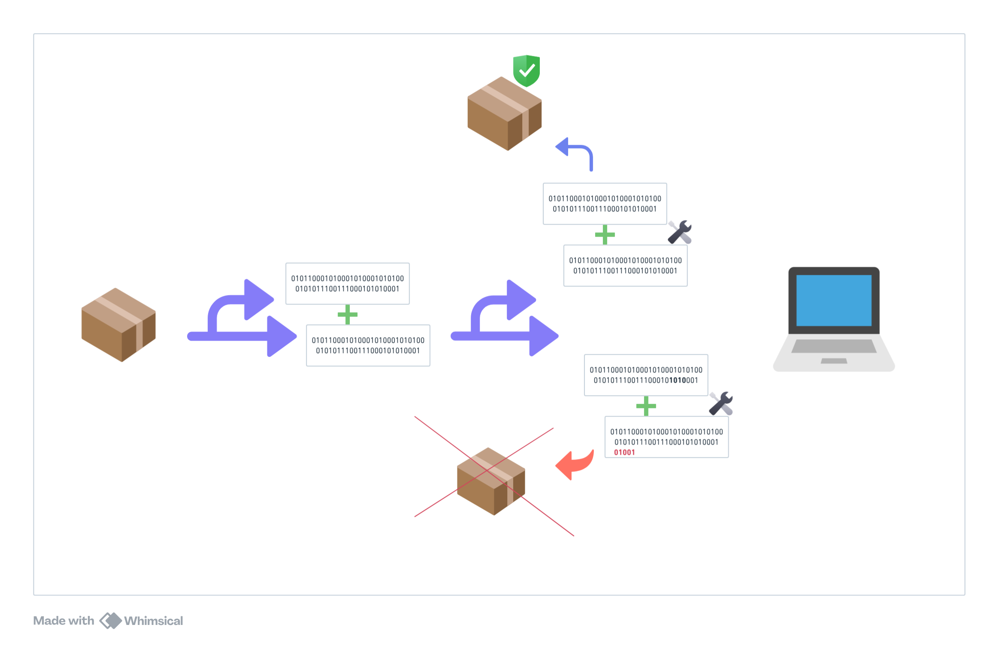

Introduction
Manipulação de Dados
Esta seção estabelece os fundamentos práticos para entender como os dados binários são tratados internamente — ponto essencial para compreender cifras, hashes e protocolos.
Começaremos com uma explicação rápida sobre endianness em Endianness – Organização de Bytes na Memória, que aborda como diferentes arquiteturas armazenam inteiros e como isso afeta a interoperabilidade e o uso seguro da criptografia.
Em seguida, em Operadores Bitwise, exploraremos os operadores bit a bit, que são fundamentais para a construção de cifras e hashes. Mostraremos como AND, OR, XOR e deslocamentos são usados na manipulação de bits, no controle de flags e na implementação de PRNGs e mecanismos criptográficos.
Veremos depois, em Operações em Blocos, os modos de operação (ECB, CBC, etc.) como técnicas de controle de fluxo entre blocos de dados — uma estrutura essencial para cifras reais. Aqui a conexão com criptografia é mais acentuada, mas o foco continua sendo como manipular blocos binários de forma sistemática.
Na sequência, estudaremos três conceitos fundamentais para o projeto de cifras modernas: Confusão e Difusão, S-Box e Permutações e Trocas. Embora estejam mais diretamente associados ao campo da criptografia, todos eles são, na essência, formas especializadas de manipulação de dados binários. Por esse motivo, optamos por incluí-los nesta seção, mantendo a coerência conceitual com os tópicos anteriores.
Esses conceitos serão reaproveitados ao longo do livro e servem de base para o entendimento de algoritmos criptográficos reais. O objetivo é diminuir o esforço cognitivo ao apresentar tópicos mais avançados, dando a chance do leitor se familiarizar com tópicos mais gerais envolvendo manipulação de dados.
Introdução
Antes de explorarmos algoritmos criptográficos como funções hash, cifras de bloco ou mecanismos de assinatura, é essencial compreender como os dados são representados e manipulados em baixo nível. A criptografia opera sobre sequências binárias, e muitas de suas construções dependem de operações como máscaras de bits, deslocamentos, permutações, concatenação e particionamento de blocos.
Esta seção reúne os fundamentos práticos que formam a base para a implementação e compreensão de algoritmos criptográficos. Embora não envolvam segurança por si só, esses conceitos estruturam a transformação e o fluxo de dados, e são usados repetidamente em construções como:
-
Expansão e compressão de blocos (como em DES)
-
Rotação de palavras (como em SHA e AES)
-
Aplicação de máscaras e XORs (ubíquos em todas as cifras)
-
Organização de blocos e endianness (em PBKDF2, HMAC, etc.)
Mesmo algoritmos clássicos, como MD2, baseiam parte de sua segurança e funcionamento em operações simples, porém precisas, sobre bytes e bits. Por isso, essa preparação técnica é indispensável para leitura crítica, implementação correta e análise de sistemas criptográficos.
Nos próximos tópicos, cobriremos:
-
A ordem dos bytes na memória (endianness)
-
Os operadores de bit mais utilizados (bitwise)
-
Como manipular dados em blocos, rotacionar e reorganizar estruturas
Esses conceitos serão reaproveitados ao longo de todo o conteúdo técnico do livro e facilitarão a compreensão tanto matemática quanto prática dos algoritmos, reduzindo o esforço cognitivo necessário para entender as diversas manipulações de dados.
Endianness - Organização de Bytes na Memória
O que é Endianness?
Endianness refere-se à ordem na qual os bytes de uma palavra multibyte (como int32, uint64, etc.) são armazenados na memória. Essa ordem pode variar entre arquiteturas e afeta diretamente a forma como os dados binários são interpretados em operações de leitura, escrita, serialização e comunicação entre sistemas.
Existem dois modelos principais: Little-endian e Big-endian.
Little-endian
Nesse modelo, o byte menos significativo (LSB – Least Significant Byte) é armazenado primeiro, no menor endereço de memória. Suponha que o valor 0x12345678 (em hexadecimal) seja armazenado em 4 bytes. A ordem de armazenamento será:
| Endereço | Byte |
|---|---|
| 0x1000 | 0x78 |
| 0x1001 | 0x56 |
| 0x1002 | 0x34 |
| 0x1003 | 0x12 |
Big-endian
Neste modelo, o byte mais significativo (MSB – Most Significant Byte) é armazenado primeiro. Para o mesmo valor 0x12345678, teríamos:
| Endereço | Byte |
|---|---|
| 0x1000 | 0x12 |
| 0x1001 | 0x34 |
| 0x1002 | 0x56 |
| 0x1003 | 0x78 |
Implementação em Go
Vamos verificar a ordem dos bytes em memória e converter entre endiannesses.
Detectando o endianness do sistema
package main
import (
"encoding/binary"
"fmt"
"unsafe"
)
func main() {
var i int32 = 0x01020304
ptr := (*[4]byte)(unsafe.Pointer(&i))
if ptr[0] == 0x04 {
fmt.Printf("Primeiro byte é %v → sistema é Little-endian (ex: x86)\n", ptr[0])
} else {
fmt.Printf("Primeiro byte é %v → sistema é Big-endian\n", ptr[0])
}
}
Saída esperada:
Primeiro byte é 4 → sistema é Little-endian (ex: x86)
Conversão explícita usando o pacote encoding/binary
package main
import (
"encoding/binary"
"fmt"
"unsafe"
)
func main() {
var i uint32 = 0x01020304
b := make([]byte, 4)
binary.BigEndian.PutUint32(b, i)
fmt.Printf("Big-endian: % x\n", b)
binary.LittleEndian.PutUint32(b, i)
fmt.Printf("Little-endian: % x\n", b)
}
Saída esperada:
Big-endian: 01 02 03 04
Little-endian: 04 03 02 01
Considerações
Saber lidar com endianness é fundamental ao manipular dados binários em protocolos, arquivos binários, criptografia ou comunicação entre sistemas heterogêneos. Por exemplo:
-
Algoritmos como SHA e MD5 especificam explicitamente a ordem dos bytes em suas operações internas.
-
Protocolos de rede, como TCP/IP, utilizam o modelo big-endian, também chamado de network byte order.
Arquiteturas modernas como x86 e x86-64 (Intel/AMD) adotam o modelo little-endian como padrão. Isso significa que o byte menos significativo de uma palavra é armazenado no menor endereço de memória. Essa decisão de projeto afeta diretamente a forma como inteiros são representados internamente e exige atenção ao manipular dados provenientes de ambientes que utilizam big-endian, como redes ou formatos binários padronizados.
Operadores Bitwise
O que são operadores bit a bit?
Operadores bitwise (bit a bit) são operadores que atuam diretamente sobre os bits de inteiros binários. São fundamentais em implementações de algoritmos criptográficos, protocolos binários, manipulação de flags e otimizações de espaço e tempo.
Ao contrário dos operadores aritméticos tradicionais (+, -, *, /), operadores bitwise operam posição a posição, diretamente sobre os bits das representações binárias dos operandos.
Operadores Fundamentais
| Operador | Nome | Descrição |
|---|---|---|
| & | AND | Retorna 1 se ambos os bits forem 1. |
| | | OR | Retorna 1 se pelo menos um dos bits é 1. |
| ^ | XOR | Exclusivo: Retorna 1 se exatamente um dos bits é 1. |
| ~ | NOT | Inverte todos os bits. |
| &^ | AND NOT (Go) | Zera os bits do primeiro operando que forem 1 no segundo operando. |
| << | Deslocamento à esquerda | Desloca os bits n posições à esquerda. (equivalente a multiplicar por ) |
| >> | Deslocamento à direita | Desloca os bits n posições à direita. (equivalente a dividir por ) |
A tabela a seguir ilustra como os operadores bitwise atuam sobre valores binários. Os exemplos utilizam inteiros de 8 bits para facilitar a visualização:
| Expressão | Operação | Resultado Binário | Resultado Decimal |
|---|---|---|---|
0b1100 & 0b1010 | AND | 0b1000 | 8 |
0b1100 | 0b1010 | OR | 0b1110 | 14 |
0b1100 ^ 0b1010 | XOR | 0b0110 | 6 |
^0b1100 | NOT (unário) | 0b...11110011¹ | depende do tipo |
0b0001 << 2 | Shift à esquerda | 0b0100 | 4 |
0b1000 >> 2 | Shift à direita | 0b0010 | 2 |
0b1111 &^ 0b0101 | AND NOT (Go) | 0b1010² | 10 |
¹ Em Go, o operador ^ representa o NOT unário. O resultado depende do tipo da variável (uint8, int, etc.). Por exemplo, ^uint8(0b1100) resulta em 0b11110011 (243 decimal).
² O operador &^ é específico da linguagem Go e realiza uma operação conhecida como "bit clear". Ele equivale a a & (~b), ou seja, faz um NOT bit a bit do segundo operando e aplica AND com o primeiro. Em C, essa operação seria expressa como a & (~b).
Exemplo prático 1: isolando bits com máscaras (Base64, SHA, etc)
Uma das aplicações mais comuns do operador AND (&) é a extração de porções específicas de um número binário, por meio de máscaras. Isso é amplamente usado em codificações como Base64, compressão, protocolos e algoritmos criptográficos.
Suponha que você queira extrair os 6 bits menos significativos de um byte. Para isso, podemos usar uma máscara 0b00111111, que equivale a 0x3F em hexadecimal. Veja:
BYTE qualquer: 01010010 (82 em decimal)
Máscara de 6 bits: 00111111 (0x3F em hexadecimal)
Resultado após AND: 00010010 (18 em decimal)
O operador & preserva apenas os bits em que ambos os operandos são 1. Portanto, ele serve como uma forma seletiva de “manter” ou “zerar” bits.
Tabela verdade para AND
| A | AND | B | Resultado |
|---|---|---|---|
| 1 | & | 1 | 1 |
| 1 | & | 0 | 0 |
| 0 | & | 1 | 0 |
| 0 | & | 0 | 0 |
Com isso, chegamos à conclusão de que:
-
Uma máscara 0b00000000 apaga todos os bits.
-
Uma máscara 0b00000001 testa apenas o bit menos significativo.
-
Para extrair bits específicos, basta construir uma máscara com 1s nas posições desejadas.
Por exemplo, podemos extrair os bits 3 e 4 de um byte da seguinte forma:
BYTE qualquer: 01010010 (82)
Máscara: 00011000 (0x18)
Resultado após AND: 00010000 (16)
Exemplo prático 2: usando bits como flags
Uma aplicação prática de operadores bitwise é o uso de flags, onde cada bit representa uma característica binária (ligado ou desligado). Esse padrão é comum em linguagens como C, Go e Rust, e em estruturas compactas de controle, como permissões ou estados.
Abaixo, usaremos o contexto do anime Naruto para ilustrar como os operadores bitwise podem ser usados para representar e manipular características das personagens.
Definindo estilos de um ninja
Abaixo, cada constante representa uma posição de bit única:
type NinjaRank uint8
const (
Genin NinjaRank = 1 << iota // 00000001
Chunin // 00000010
Jounin // 00000100
Ambu // 00001000
Sannin // 00010000
Kage // 00100000
Sage // 01000000
Jinchuriki // 10000000
)
Combinando características com OR (|)
naruto := Genin | Sage | Jinchuriki // 10100001
tsunade := Jounin | Sannin | Kage // 00110100
kakashi := Jounin | Ambu // 00001100
Tabela verdade para OR
Para entender como a combinação funciona bit a bit, veja a tabela verdade da operação OR:
| A | OR | B | Resultado |
|---|---|---|---|
| 1 | | | 1 | 1 |
| 1 | | | 0 | 1 |
| 0 | | | 1 | 1 |
| 0 | | | 0 | 0 |
O operador | retorna 1 sempre que pelo menos um dos bits for 1. Por isso ele é ideal para adicionar flags a uma variável sem interferir nos bits já definidos.
Testando características com AND (&)
if naruto & Genin == Genin {
fmt.Println("Naruto é Genin.")
}
Adicionando características com OR (|)
naruto |= Jounin // promove Naruto para Jounin
Removendo características com AND NOT (&^)
kakashi &^= Kage // remove o status de Kage de Kakashi
Tabela verdade para NOT
O operador NOT (~) inverte cada bit individualmente:
| A | NOT | Resultado |
|---|---|---|
| 1 | ~ | 0 |
| 0 | ~ | 1 |
Exemplo prático 3: usando XOR em PRNGs e criptografia
O operador XOR (^) é um dos mais utilizados em criptografia moderna, principalmente por suas propriedades de reversibilidade e difusão controlada. Ele também aparece como base de muitos geradores de números pseudoaleatórios (PRNGs), como a família Xorshift.
A propriedade central do XOR é:
A ^ A = 0 (auto-cancelamento)
A ^ 0 = A (identidade)
A ^ B ^ B = A (reversível)
Essas propriedades tornam o XOR ideal para cifragem, embaralhamento e geração determinística de entropia.
Xorshift simplificado
A seguir, um PRNG de 32 bits usando apenas XOR e shifts:
package main
import "fmt"
func xorshift32(x uint32) uint32 {
x ^= x << 13
x ^= x >> 17
x ^= x << 5
return x
}
func main() {
seed := uint32(123456789)
for i := 0; i < 5; i++ {
seed = xorshift32(seed)
fmt.Printf("Valor %d: %032b\n", i+1, seed)
}
}
Esse gerador, embora simples, é capaz de produzir uma sequência pseudoaleatória com boa dispersão de bits. Ele é construído exclusivamente com operadores ^, << e >>.
Tabela verdade para XOR
| A | XOR | B | Resultado |
|---|---|---|---|
| 1 | ^ | 1 | 0 |
| 0 | ^ | 0 | 0 |
| 1 | ^ | 0 | 1 |
| 0 | ^ | 1 | 1 |
A operação retorna 1 apenas quando os bits são diferentes. Por isso, é chamada de OU exclusivo (exclusive OR).
Exemplo prático 4: deslocamento de bits (<< e >>)
Os operadores de deslocamento << (shift à esquerda) e >> (shift à direita) são amplamente utilizados em operações de dispersão, ajustes de bits e estruturação de dados binários. Eles são comuns em geradores pseudoaleatórios, cifras e funções de hash.
A operação x << n desloca os bits de x para a esquerda em n posições, preenchendo com 0 à direita. Já x >> n desloca os bits para a direita, preenchendo com 0 à esquerda (em inteiros sem sinal).
Aplicação prática: passo de um LFSR (Linear Feedback Shift Register)
Sem entrar nos detalhes do algoritmo agora, podemos observar um exemplo de uso de deslocamento para atualizar um valor de estado:
package main
import "fmt"
func stepLFSR(state uint8) uint8 {
feedback := ((state >> 0) ^ (state >> 2)) & 1
state = (state >> 1) | (feedback << 7)
return state
}
func main() {
state := uint8(0b10010010)
for i := 0; i < 5; i++ {
state = stepLFSR(state)
fmt.Printf("Estado %d: %08b\n", i+1, state)
}
}
Neste exemplo:
-
Um bit de realimentação é calculado via
XORde dois bits do estado. -
O estado é deslocado para a direita
(>> 1), descartando o LSB. -
O novo bit de feedback é colocado na posição mais à esquerda via feedback
<< 7.
Embora não exista uma tabela verdade para o deslocamento, segue um exemplo visual do deslocamento:
| Operação | Entrada | Resultado | Observação |
|---|---|---|---|
x << 1 | 01010010 | 10100100 | Perde o MSB, ganha 0 no LSB |
x >> 1 | 01010010 | 00101001 | Perde o LSB, ganha 0 no MSB |
x >> 3 | 11100000 | 00011100 | Bits deslizam 3 casas à direita |
Esse comportamento é determinístico, barato computacionalmente e essencial para muitas transformações em cifras e PRNGs.
Importância em Criptografia
Operadores bitwise são usados constantemente em algoritmos criptográficos. Exemplos:
-
O
XOR(^) é a operação mais usada em cifras de fluxo e blocos — por exemplo, no modo CTR ou no cálculo de paridade. -
Cifras de fluxo: cada byte da mensagem é combinado com um byte do keystream usando
XOR. -
Funções hash: o
XORé usado para compressão, mistura e difusão de bits internos. -
AND, (&)OR(|), eNOT(~) são usados em compressão de mensagens, máscaras, e manipulação de estruturas internas como as de SHA-2. -
Shifts (
<<, >>) implementam rotações e misturas, fundamentais em S-Boxes e funções de dispersão.
Considerações
Dominar os operadores bitwise é essencial para compreender o funcionamento interno de muitos algoritmos criptográficos. Além disso, esse tipo de manipulação é eficiente, compacta e amplamente utilizada em implementações de baixo nível, seja em bibliotecas de segurança, protocolos ou microcontroladores.
Nos próximos tópicos, aplicaremos esses conceitos na manipulação de blocos de dados, operações estruturais e transformação binária direta.
Operações em Blocos
O que são modos de operação?
Muitos algoritmos lidam com blocos de dados de tamanho fixo, como 64 ou 128 bits. Quando a entrada é maior que um único bloco, é necessário dividir os dados e aplicar transformações bloco a bloco, seguindo um modo de operação.
Embora esses modos sejam usados em contextos criptográficos, o objetivo aqui é entender como os dados são processados tecnicamente, sem considerar a lógica de cifra. Vamos nos concentrar em:
- Como os blocos são encadeados
- Qual a dependência entre entradas e saídas
- Como o estado interno evolui
- Como entrada, saída e IV interagem
Para fins ilustrativos, faremos comentários como // aplicar cifra aqui, mas não implementaremos cifra real nesta seção.
Divisão em blocos
Antes de aplicar qualquer modo de operação, os dados precisam ser divididos em blocos de tamanho fixo. Se os dados não são múltiplo do tamanho do bloco, algum tipo de preenchimento (padding) será necessário. Veremos mais sobre padding em uma seção posterior, em especial quando estivermos falando sobre Base64.
Exemplo com blocos de 8 bytes:
Entrada (24 bytes): "ExemploDeTextoCriptografado"
Blocos:
B1 = "ExemploD"
B2 = "eTextoCr"
B3 = "iptograf"
B4 = "ado\x00\x00\x00" // padding se aplicado
A seguir, vamos examinar os principais modos de operação: ECB, CBC, CFB, OFB, CTR e outros opcionais.
ECB — Electronic Codebook
O modo ECB é o mais simples de todos: cada bloco de entrada é processado de forma independente dos demais. Não há encadeamento, nem dependência de bloco anterior. Por isso, é possível aplicar a transformação a todos os blocos em paralelo.
Uma analogia útil é pensar em ECB como um carimbo: para cada pedaço do texto, aplica-se sempre o mesmo molde. Se dois blocos forem iguais, o resultado será o mesmo.
Apesar de sua simplicidade, esse comportamento pode expor padrões quando blocos repetidos resultam em saídas repetidas — por isso o ECB é desaconselhado em aplicações criptográficas. Mas como modelo de operação, é útil para entender a base dos modos.
Funcionamento
Entrada: B1 B2 B3 B4
| | | |
v v v v
Saída: C1 C2 C3 C4
// Cada Ci = cifra(Bi)
Implementação simulada em Go
package main
import "fmt"
func ecb(blocks []string) []string {
out := make([]string, len(blocks))
for i, b := range blocks {
// Simulando uma "cifra" com reverso de string
out[i] = reverse(b) // aplicar cifra real aqui
}
return out
}
func reverse(s string) string {
runes := []rune(s)
for i, j := 0, len(runes)-1; i < j; i, j = i+1, j-1 {
runes[i], runes[j] = runes[j], runes[i]
}
return string(runes)
}
func main() {
blocos := []string{"ExemploD", "eTextoCr", "iptograf", "ado\x00\x00\x00"}
saida := ecb(blocos)
for i, b := range saida {
fmt.Printf("C%d: %q\n", i+1, b)
}
}
Esse código demonstra a ideia de que cada bloco é transformado isoladamente. A função reverse simula uma transformação sem depender de contexto.
Nos próximos modos, veremos como introduzir estado e encadeamento entre os blocos.
CBC — Cipher Block Chaining
O modo CBC introduz encadeamento entre os blocos de dados. Aqui, cada bloco de entrada é combinado (via XOR) com o bloco de saída anterior antes da transformação ser aplicada. Isso garante que blocos idênticos de entrada não gerem saídas idênticas, desde que a inicialização seja diferente.
O primeiro bloco é combinado com um vetor de inicialização (IV - Initialization Vector ), que deve ser único e imprevisível para cada mensagem.
Pense em CBC como uma corrente: cada elo (bloco) depende do anterior. Se você mudar um elo, o restante da corrente será alterado. Esse encadeamento dá mais segurança estrutural ao fluxo de blocos.
Funcionamento
Entrada: B1 B2 B3 B4
| | | |
IV ---> XOR | | | |
v v v v v
cifra XOR XOR XOR ...
| | | | |
C1 -> C2 -> C3 -> C4
// C1 = cifra(B1 ⊕ IV)
// C2 = cifra(B2 ⊕ C1)
// C3 = cifra(B3 ⊕ C2)
// C4 = cifra(B4 ⊕ C3)
Implementação simulada em Go
package main
import "fmt"
func xor(a, b string) string {
out := make([]byte, len(a))
for i := range a {
out[i] = a[i] ^ b[i]
}
return string(out)
}
func cbc(blocks []string, iv string) []string {
out := make([]string, len(blocks))
prev := iv
for i, b := range blocks {
mix := xor(b, prev)
out[i] = reverse(mix) // aplicar cifra real aqui
prev = out[i] // saída vira entrada para o próximo XOR
}
return out
}
func main() {
blocos := []string{"ExemploD", "eTextoCr", "iptograf", "ado\x00\x00\x00"}
iv := "12345678" // mesmo tamanho de bloco
saida := cbc(blocos, iv)
for i, b := range saida {
fmt.Printf("C%d: %q\n", i+1, b)
}
}
Aqui, usamos uma função xor simples para combinar blocos. A função reverse, como antes, simula a aplicação de uma cifra. O encadeamento é visível no uso da variável prev, que propaga o resultado entre os blocos.
No próximo modo, veremos como esse encadeamento pode ser reorganizado para permitir recuperação de dados em tempo real.
CFB — Cipher Feedback
O modo CFB transforma uma cifra de bloco em um sistema que se comporta como uma cifra de fluxo. Diferente do ECB e CBC, o CFB permite operar em unidades menores que o bloco (como bytes ou bits), o que é útil para aplicações onde os dados não chegam em blocos completos.
Apesar de utilizar uma cifra de bloco internamente, o que realmente é cifrado é o vetor de realimentação. Esse vetor é processado com a cifra, e o resultado é combinado (via XOR) com o bloco ou byte de entrada para gerar a saída.
Funcionamento (versão em blocos inteiros)
Entrada: P1 P2 P3 P4
| | | |
IV -----> cifra | | |
| | | |
v v v v
XOR XOR XOR XOR
| | | |
C1 ---> C2 -> C3 -> C4
// C1 = P1 ⊕ cifra(IV)
// C2 = P2 ⊕ cifra(C1)
// C3 = P3 ⊕ cifra(C2)
// C4 = P4 ⊕ cifra(C3)
Diferente do CBC, a cifra é aplicada sobre a saída anterior, não sobre a entrada. Isso permite que a cifra seja usada como um gerador de fluxo pseudoaleatório que é então combinado com os dados reais.
Implementação simulada em Go
package main
import "fmt"
func xor(a, b string) string {
out := make([]byte, len(a))
for i := range a {
out[i] = a[i] ^ b[i]
}
return string(out)
}
func cfb(entrada []string, iv string) []string {
saida := make([]string, len(entrada))
estado := iv
for i, p := range entrada {
keystream := reverse(estado) // aplicar cifra real aqui
saida[i] = xor(p, keystream)
estado = saida[i] // realimentado com saída
}
return saida
}
func reverse(s string) string {
runes := []rune(s)
for i, j := 0, len(runes)-1; i < j; i, j = i+1, j-1 {
runes[i], runes[j] = runes[j], runes[i]
}
return string(runes)
}
func main() {
blocos := []string{"ExemploD", "eTextoCr", "iptograf", "ado\x00\x00\x00"}
iv := "12345678"
saida := cfb(blocos, iv)
for i, b := range saida {
fmt.Printf("C%d: %q\n", i+1, b)
}
}
Neste exemplo:
reverserepresenta a cifra aplicada sobre o estado internoestadoé atualizado com a saída anterior, simulando o feedbackxorcombina a saída da cifra com o bloco de entrada
Nos modos seguintes, veremos como separar o fluxo gerado da entrada original (OFB) e como introduzir contadores (CTR).
OFB — Output Feedback
O modo OFB (Output Feedback) é semelhante ao CFB, mas com uma diferença importante: o vetor de realimentação é atualizado independentemente da entrada. Isso significa que o fluxo pseudoaleatório gerado pela cifra é completamente dissociado do texto de entrada, permitindo paralelismo na geração e reutilização do keystream.
Na prática, o OFB transforma uma cifra de bloco em uma cifra de fluxo pura, onde o texto de entrada é combinado com uma sequência pseudoaleatória de bits gerados iterativamente a partir do IV.
Funcionamento
Entrada: P1 P2 P3 P4
| | | |
IV -----> cifra ---> cifra ---> cifra --->
| | | |
v v v v
XOR XOR XOR XOR
| | | |
C1 C2 C3 C4
// E1 = cifra(IV)
// E2 = cifra(E1)
// E3 = cifra(E2)
// E4 = cifra(E3)
// Ci = Pi ⊕ Ei
Como o OFB não depende da entrada anterior, ele é ideal para ambientes em que erros de transmissão não podem propagar corrompendo blocos seguintes.
Implementação simulada em Go
package main
import "fmt"
func xor(a, b string) string {
out := make([]byte, len(a))
for i := range a {
out[i] = a[i] ^ b[i]
}
return string(out)
}
func ofb(entrada []string, iv string) []string {
saida := make([]string, len(entrada))
estado := iv
for i, p := range entrada {
keystream := reverse(estado) // aplicar cifra real aqui
saida[i] = xor(p, keystream)
estado = keystream // fluxo é autônomo
}
return saida
}
func reverse(s string) string {
runes := []rune(s)
for i, j := 0, len(runes)-1; i < j; i, j = i+1, j-1 {
runes[i], runes[j] = runes[j], runes[i]
}
return string(runes)
}
func main() {
blocos := []string{"ExemploD", "eTextoCr", "iptograf", "ado\x00\x00\x00"}
iv := "12345678"
saida := ofb(blocos, iv)
for i, b := range saida {
fmt.Printf("C%d: %q\n", i+1, b)
}
}
Neste exemplo:
- O
estadoé atualizado somente pela cifra anterior, sem depender da entrada - O fluxo gerado é previsível e determinístico para o mesmo IV
O modo OFB é adequado para aplicações onde a integridade parcial dos dados deve ser preservada mesmo em caso de erros de transmissão.
No próximo modo, introduziremos um contador para gerar blocos independentes — o modo CTR.
CTR — Counter Mode
O modo CTR (Counter) transforma uma cifra de bloco em uma cifra de fluxo por meio da geração de um keystream determinístico, baseado em um contador. Ao invés de realimentar saídas anteriores, ele cifra valores sequenciais derivados de um IV (Initialization Vector).
Cada bloco de texto é combinado (via XOR) com a cifra do contador correspondente. Isso permite que cada bloco seja processado de forma independente, facilitando a paralelização.
Funcionamento
Entrada: P1 P2 P3 P4
| | | |
IV+0 --> cifra
| | | |
v v v v
XOR XOR XOR XOR
| | | |
C1 C2 C3 C4
// C1 = P1 ⊕ cifra(IV + 0)
// C2 = P2 ⊕ cifra(IV + 1)
// C3 = P3 ⊕ cifra(IV + 2)
// C4 = P4 ⊕ cifra(IV + 3)
Esse modo é muito utilizado por sua eficiência e por permitir operações em paralelo. Como o contador é previsível, os blocos de keystream podem ser gerados antes mesmo da chegada da mensagem.
Implementação simulada em Go
package main
import (
"fmt"
"strconv"
)
func xor(a, b string) string {
out := make([]byte, len(a))
for i := range a {
out[i] = a[i] ^ b[i]
}
return string(out)
}
func padCounter(base string, count int) string {
suffix := fmt.Sprintf("%08d", count)
return base[:len(base)-len(suffix)] + suffix
}
func ctr(entrada []string, iv string) []string {
saida := make([]string, len(entrada))
for i, p := range entrada {
counter := padCounter(iv, i)
keystream := reverse(counter) // aplicar cifra real aqui
saida[i] = xor(p, keystream)
}
return saida
}
func reverse(s string) string {
runes := []rune(s)
for i, j := 0, len(runes)-1; i < j; i, j = i+1, j-1 {
runes[i], runes[j] = runes[j], runes[i]
}
return string(runes)
}
func main() {
blocos := []string{"ExemploD", "eTextoCr", "iptograf", "ado\x00\x00\x00"}
iv := "0000000000000000" // deve ter tamanho fixo
saida := ctr(blocos, iv)
for i, b := range saida {
fmt.Printf("C%d: %q\n", i+1, b)
}
}
Nesta simulação:
- O contador é representado por um sufixo decimal no
IV - A função
reversesimula a cifra aplicada ao contador - Cada bloco é processado com base em um valor de contador diferente
O CTR é amplamente utilizado em prática (por exemplo, em AES-CTR), sendo considerado seguro e eficiente quando o IV não é reutilizado com a mesma chave.
XTS — XEX-based Tweaked Codebook Mode with Ciphertext Stealing
O modo XTS foi projetado especificamente para cifragem de unidades de armazenamento em blocos, como discos e SSDs. Ele combina uma cifra de bloco (como AES) com uma estrutura especial chamada tweak, que personaliza a operação para cada setor ou bloco físico, evitando repetições previsíveis.
XTS é um modo baseado em XEX (XOR-Encrypt-XOR) com roubo de texto cifrado (ciphertext stealing), permitindo lidar com entradas que não são múltiplas do tamanho do bloco sem recorrer a padding.
XTS é o modo de operação recomendado por padrões como IEEE P1619 para cifragem de dados em discos.
Estrutura geral
- Usa duas chaves: uma para a cifra principal (
K1) e outra para o tweak (K2) - Gera um tweak a partir do número de setor ou posição lógica do bloco
- Aplica o tweak com XOR antes e depois da cifra (XOR-Encrypt-XOR)
Funcionamento simplificado
Para cada bloco i:
Tweak_i = cifra(K2, bloco_logico) << i // ajustado por multiplicador
M_i' = P_i ⊕ Tweak_i
C_i' = cifra(K1, M_i')
C_i = C_i' ⊕ Tweak_i
Essa construção garante que dois blocos com mesmo conteúdo, mas localização diferente no disco, produzam saídas diferentes. Além disso, XTS suporta entradas que não completam um bloco inteiro usando roubo de bits do bloco seguinte (ciphertext stealing).
Simulação conceitual
Para simplificar, podemos demonstrar apenas a ideia do uso de tweak e da dupla XOR:
package main
import "fmt"
func xor(a, b string) string {
out := make([]byte, len(a))
for i := range a {
out[i] = a[i] ^ b[i]
}
return string(out)
}
func xts(blocks []string, tweakBase string) []string {
saida := make([]string, len(blocks))
for i, p := range blocks {
tweak := genTweak(tweakBase, i)
m1 := xor(p, tweak)
cifra := reverse(m1) // cifra principal simulada
saida[i] = xor(cifra, tweak)
}
return saida
}
func genTweak(base string, i int) string {
b := []byte(base)
for j := range b {
b[j] = b[j] ^ byte(i) // mistura simples com índice
}
return string(b)
}
func reverse(s string) string {
r := []rune(s)
for i, j := 0, len(r)-1; i < j; i, j = i+1, j-1 {
r[i], r[j] = r[j], r[i]
}
return string(r)
}
func main() {
blocos := []string{"ExemploD", "eTextoCr", "iptograf", "ado\x00\x00\x00"}
tweak := "SETORESP"
saida := xts(blocos, tweak)
for i, b := range saida {
fmt.Printf("C%d: %q\n", i+1, b)
}
}
Características
- Suporta operação paralela
- Seguro contra repetições de padrões em setores
- Recomendado para cifragem de disco e armazenamento
Embora mais complexo que os modos anteriores, o XTS resolve limitações práticas importantes na cifragem de dispositivos reais.
Com isso, encerramos os principais modos de operação. A seguir, faremos uma comparação entre eles, destacando características técnicas e aplicações ideais.
Comparação entre Modos de Operação
A análise técnica dos modos de operação não deve ser feita apenas com base em características isoladas, mas também considerando seu contexto histórico e a motivação por trás de cada proposta. A seguir, apresentamos uma visão evolutiva e comparativa entre os modos ECB, CBC, CFB, OFB, CTR e XTS.
Evolução histórica e motivação
O primeiro modo amplamente utilizado foi o ECB (Electronic Codebook). Seu funcionamento direto e paralelizável o tornava atraente, mas rapidamente ficou claro que ele era inadequado para dados estruturados: blocos iguais produziam saídas idênticas, expondo padrões — o que compromete completamente a segurança.
Para contornar esse problema, surgiu o CBC (Cipher Block Chaining). Ele introduziu encadeamento entre os blocos: cada bloco depende do anterior. Isso impede que blocos idênticos de entrada produzam saídas idênticas, mesmo com a mesma chave. Contudo, essa segurança adicional vem ao custo da impossibilidade de paralelismo na cifragem — já que é preciso aguardar o resultado do bloco anterior.
O modo CFB (Cipher Feedback) foi criado como alternativa ao CBC para contextos de transmissão de dados em tempo real, permitindo cifragem de tamanhos menores que o bloco (como bytes ou bits). Seu encadeamento ocorre via saída anterior, o que o torna seguro, mas ainda dependente do processamento sequencial.
Já o OFB (Output Feedback) nasce como uma variação do CFB, buscando resolver a propagação de erros: ao invés de realimentar com a saída cifrada, o OFB gera um fluxo independente da entrada, tornando o sistema mais tolerante a falhas e adequado para ambientes ruidosos (como transmissões digitais).
O modo CTR (Counter Mode) representa uma mudança significativa: elimina o encadeamento e adota um contador como fonte de entropia. Cada bloco da entrada é combinado com a cifra do contador correspondente. Com isso, torna-se totalmente paralelizável, ideal para ambientes de alto desempenho, redes e sistemas distribuídos. A cifragem pode inclusive ser precomputada, desde que o contador e a chave sejam fixos.
Por fim, o modo XTS surge para atender um problema prático não resolvido por nenhum dos anteriores: a cifragem segura de blocos físicos em discos. Ele se baseia em XEX (XOR-Encrypt-XOR), utiliza dois conjuntos de chaves, gera um tweak exclusivo por posição e ainda lida com blocos incompletos sem padding (via ciphertext stealing). XTS é, portanto, uma construção especializada, recomendada por padrões como o IEEE P1619.
Relações e compensações
Cada modo surgiu como resposta a uma limitação do anterior:
- CBC corrige a repetição de padrões do ECB.
- CFB adapta o CBC para trabalhar em unidades menores.
- OFB remove a propagação de erros do CFB.
- CTR substitui todos os anteriores quando o foco é paralelismo e desempenho.
- XTS trata o caso específico de cifragem de setores físicos.
É importante compreender essas relações para fazer escolhas adequadas em projetos reais. Modos de operação não são equivalentes: cada um atende a um cenário específico de uso e impõe restrições distintas.
Na próxima seção, faremos considerações finais sobre segurança, desempenho e práticas recomendadas.
Considerações Finais sobre Modos de Operação
Os modos de operação analisados neste capítulo evidenciam como decisões de projeto em criptografia envolvem trocas entre segurança, eficiência, flexibilidade e resiliência a falhas. Nenhum modo é universalmente superior: cada um resolve um subconjunto de problemas e impõe restrições específicas.
O objetivo deste capítulo foi isolar os modos de operação, apresentando suas características técnicas e funcionais de forma independente de algoritmos específicos. A relação com cifras reais (como AES ou ChaCha20), bem como as implicações práticas de segurança na escolha do modo, serão retomadas e aprofundadas em seções posteriores do livro.
Sobre segurança
- ECB deve ser evitado em qualquer situação onde haja estrutura ou repetição nos dados. Seu uso é restrito a testes ou casos didáticos.
- CBC, CFB e OFB oferecem segurança razoável quando combinados com IVs aleatórios e não reutilizados.
- CTR e XTS são considerados seguros e modernos, desde que o contador ou tweak não se repita com a mesma chave.
Sobre desempenho e paralelismo
- CTR e XTS são os únicos modos que permitem paralelismo total na cifra e decifra.
- ECB também é paralelizável, mas inseguro.
- CBC, CFB e OFB são sequenciais na cifra e, portanto, menos eficientes para grandes volumes de dados ou ambientes concorrentes.
Sobre robustez
- OFB e CTR não propagam erros em cadeia, tornando-os ideais para canais com ruído.
- CBC e CFB propagam erros de forma localizada, e podem corromper blocos subsequentes na decifra.
Escolha prática
A escolha do modo de operação deve considerar:
- A natureza dos dados (texto, fluxo, armazenamento físico)
- A sensibilidade a erros de transmissão
- A necessidade de desempenho e paralelismo
- As garantias de segurança esperadas
| Caso de uso | Modo recomendado |
|---|---|
| Criptografia de disco | XTS |
| Comunicação em tempo real | CFB ou OFB |
| Alta performance em redes | CTR |
| Arquivos e backups | CBC |
Em todos os casos, o uso de vetores de inicialização (IVs) únicos e imprevisíveis é essencial para garantir a segurança dos modos baseados em encadeamento ou contadores.
Com isso, concluímos a análise dos modos de operação. As próximas seções tratarão da implementação de cifras reais e da integração com essas estruturas de controle de fluxo.
Confusão e Difusão
As propriedades de confusão e difusão são dois princípios fundamentais estabelecidos por Shannon [1], constituindo pilares da segurança em sistemas criptográficos modernos. Esses conceitos têm como objetivo maximizar a incerteza e a dispersão das relações estatísticas entre a mensagem não cifrada e a mensagem cifrada, dificultando ataques baseados em análise de frequência ou estrutura.
Definições formais
Confusão: o objetivo é tornar complexa a relação entre a chave de encriptação e o texto cifrado. De acordo com Shannon, "o sistema deve ser projetado de modo que cada bit da chave afete, de forma imprevisível, muitos bits da saída". Confusão impede que um atacante deduza partes da chave mesmo conhecendo partes do texto cifrado.
Difusão: refere-se à dispersão estatística do conteúdo da mensagem não cifrada ao longo da mensagem cifrada. Ou seja, um pequeno número de bits alterados na entrada deve afetar um grande número de bits na saída. A difusão elimina padrões e distribui redundâncias da mensagem original.
Esse comportamento, em que pequenas alterações na entrada produzem grandes alterações na saída, é conhecido como efeito avalanche, e é resultado da aplicação combinada de confusão e difusão.
Essas duas propriedades são frequentemente implementadas em cifras modernas por meio de redes de substituição e permutação redes de substituição e permutação (Substitution-Permutation Networks), conforme discutido por Donald Knuth em The Art of Computer Programming [5], onde destaca a importância da aleatoriedade controlada na construção de algoritmos seguros.
Exemplo Prático: Simulações de Confusão e Difusão em Go
Para isolar os conceitos, não implementamos uma cifra completa, mas sim funções que exemplificam mecanicamente confusão (via substituições não lineares com chave) e difusão (via permutações e operações de dispersão simples).
A estrutura será:
-
Confusão: uso de uma substituição baseada em chave (S-Box parametrizada).
-
Difusão: uso de permutação fixa e dispersão via operações XOR.
package main
import (
"crypto/sha256"
"fmt"
)
// Gera uma S-Box pseudoaleatória baseada em uma chave
func generateSBox(key []byte) [256]byte {
var sbox [256]byte
hash := sha256.Sum256(key)
seed := uint32(0)
for i := 0; i < 4; i++ {
seed ^= uint32(hash[i]) << (8 * i)
}
for i := range sbox {
sbox[i] = byte((i*int(seed) + 31) % 256)
}
return sbox
}
// Confusão: aplica substituição não linear via S-Box
func confusion(input []byte, sbox [256]byte) []byte {
out := make([]byte, len(input))
for i, b := range input {
out[i] = sbox[b]
}
return out
}
// Difusão: permutação e dispersão via XOR entre posições
func diffusion(input []byte) []byte {
out := make([]byte, len(input))
for i := range input {
out[i] = input[i]
if i > 0 {
out[i] ^= input[i-1]
}
}
return out
}
func main() {
key := []byte("chave-secreta")
entrada := []byte("mensagem123456")
sbox := generateSBox(key)
c := confusion(entrada, sbox)
d := diffusion(c)
fmt.Printf("Original : %x\n", entrada)
fmt.Printf("Confusão : %x\n", c)
fmt.Printf("Difusão : %x\n", d)
}
Análise do código:
Observe que:
-
A função generateSBox cria uma tabela de substituição (S-Box) que introduz confusão, pois depende da chave de entrada.
-
A função diffusion implementa uma difusão simples, propagando a influência de cada byte anterior sobre o próximo com XOR.
Considerações Finais
A aplicação isolada de confusão e difusão permite o estudo modular de suas propriedades, sem a complexidade adicional de um esquema criptográfico completo. Shannon já antecipava que a combinação adequada dessas técnicas seria suficiente para criar sistemas resistentes à análise estatística.
Knuth, por sua vez, destacou que a boa aleatorização estruturada é o centro da segurança criptográfica — e que difusão e confusão são ferramentas matemáticas precisamente voltadas a esse objetivo.
O leitor é convidado a explorar esses conceitos com maior profundidade consultando a referência [1] e [5].
Referências
[1] C. E. Shannon, Communication Theory of Secrecy Systems, Bell System Technical Journal, 1949.
[5] D. E. Knuth, The Art of Computer Programming, Volume 2: Seminumerical Algorithms, 3rd Edition, Addison-Wesley, 1997.
S-Boxes: Substituições Não Lineares
As S-Boxes (Substitution Boxes) são funções fundamentais em cifras simétricas modernas. Elas realizam substituições não lineares, introduzindo confusão no sistema criptográfico, conforme definido por Shannon [1]. Em redes de substituição-permutação (SPN) e cifras de Feistel, as S-Boxes são os principais elementos responsáveis por tornar complexa a relação entre a chave e o texto cifrado.
Definição Formal
Uma S-Box é uma função
que mapeia uma entrada binária de bits para uma saída de bits. Quando , a S-Box é dita bijetiva (ou uma permutação) se cada saída for única.
Exemplo típico:
- No AES, a S-Box é uma permutação de 8 bits para 8 bits, isto é, .
Propriedades desejáveis:
-
Não-linearidade alta (distância de Hamming em relação a todas funções lineares).
-
Avalanche: uma mudança de 1 bit na entrada afeta múltiplos bits da saída.
-
Resistência a diferenciais e lineares: saída deve ser estatisticamente imprevisível sob diferenças ou aproximações lineares na entrada.
Métodos de construção:
A criação de S-Boxes pode ser feita de diferenes maneiras, dependendo do contexto e objetivos de segurança:
- Baseadas em estruturas algébricas
- AES (Rijndael) utiliza a inversa multiplicativa no corpo finito , seguida de uma transformação afim:
- Inverso: (com )
- Transformação afim: multiplicação e soma sobre
Essa construção é baseada no padrão FIPS 197 [2]. e foi escolhida por sua alta não-linearidade e resistência a ataques diferenciais.
- Baseadas em constantes (look-up fixo)
-
MD2 define uma S-Box de 256 bytes fixos, supostamente derivada dos dígitos de . A origem exata nunca foi publicada por Rivest, mas acredita-se que a sequência tenha sido escolhida de forma a evitar padrões evidentes [3].
-
DES usa oito S-Boxes diferentes com mapeamentos de 6 bits para 4 bits, cuidadosamente projetadas para resistir a criptoanálise diferencial (ver Coppersmith [4]).
- Pseudoaleatórias derivadas de chave
- Em cifras modernas como Blowfish, a S-Box é preenchida dinamicamente durante a expansão da chave. Isso dificulta análise e torna a estrutura dependente da chave secreta.
Exemplo prático em Go: Construindo uma S-Box simples
Aqui, mostramos duas formas distintas de definir S-Boxes em Go:
- AES-like (algébrica) - inverso multiplicativo seguido de transformação afim (simplificada).
- MD2-like (constante fixa) - look-up fixo.
package main
import (
"fmt"
"math/bits"
)
// Exemplo simplificado de S-Box: inverso em GF(2^8) + afim (AES-like simplificada)
func simpleAffineSBox() [256]byte {
var sbox [256]byte
for i := 0; i < 256; i++ {
inv := inverseByte(byte(i))
sbox[i] = inv ^ bits.RotateLeft8(inv, 1) ^ 0x63 // afim simplificada
}
return sbox
}
// Inverso multiplicativo em GF(2^8) com polinômio redutor x^8 + x^4 + x^3 + x + 1
func inverseByte(x byte) byte {
if x == 0 {
return 0
}
var inv byte = 1
for i := 1; i < 256; i++ {
if byteMultiply(x, inv) == 1 {
return inv
}
inv++
}
return 0
}
// Multiplicação em GF(2^8)
func byteMultiply(a, b byte) byte {
var p byte = 0
for b != 0 {
if b&1 != 0 {
p ^= a
}
hi := a & 0x80
a <<= 1
if hi != 0 {
a ^= 0x1B // AES irreducible polynomial
}
b >>= 1
}
return p
}
// Exemplo de S-Box constante (MD2-like)
func md2SBox() [256]byte {
return [256]byte{
0x29, 0x2E, 0x43, 0x32, 0x8B, 0x1C, 0x1A, 0x06, 0x3F, 0x3C, 0x7F, 0x8A, 0x0E, 0x19, 0x4F, 0x43,
// ... complete até 256 valores reais conforme tabela do MD2
}
}
func main() {
sbox := simpleAffineSBox()
fmt.Printf("Exemplo de S-Box (simplificada):\n")
for i := 0; i < 16; i++ {
fmt.Printf("%02x ", sbox[i])
}
fmt.Println()
}
Considerações finais
As S-Boxes são blocos fundamentais na construção de cifras seguras. Sua estrutura influencia diretamente a resistência contra ataques diferenciais, lineares e por análise estatística. S-Boxes bem projetadas devem apresentar não-linearidade elevada e boa dispersão da entrada na saída, contribuindo para o efeito avalanche.
Embora possam ser fixas ou derivadas de chave, é essencial que sejam analisadas formalmente quanto às suas propriedades de segurança — algo que o projeto do AES exemplifica de forma rigorosa. Em contrapartida, designs mais antigos, como MD2, revelam escolhas empíricas, ainda que eficazes em seu tempo.
Referências
[1] C. E. Shannon, Communication Theory of Secrecy Systems, Bell System Technical Journal, 1949.
[2] National Institute of Standards and Technology, FIPS-197: Advanced Encryption Standard (AES), 2001.
[3] R. Rivest, The MD2 Message-Digest Algorithm, RFC 1319, 1992.
[4] D. Coppersmith, The Data Encryption Standard (DES) and Its Strength Against Attacks, IBM Journal of Research and Development, 1994.
[5] D. E. Knuth, The Art of Computer Programming, Vol. 2, Addison-Wesley, 1997.
Permutações e Trocas
Em cifras simétricas, a dispersão de dependências locais — fundamental para a difusão — pode ser alcançada por meio de operações lineares, como multiplicações matriciais, ou estruturais, como permutações e trocas de posição. Este tipo de transformação reorganiza os dados sem alterar seu conteúdo individual, mas com profundo impacto estatístico na propagação de alterações pela estrutura do algoritmo.
Permutações como mecanismo de difusão
Uma permutação é uma bijeção sobre o conjunto de posições de bits ou bytes. Aplicada a um vetor de entrada, ela redistribui os elementos segundo uma ordem fixa ou pseudoaleatória. Embora não introduza não-linearidade, a permutação é essencial para ampliar o alcance das alterações provocadas pelas S-Boxes ou outras funções não lineares.
Na arquitetura de cifras modernas, as permutações são utilizadas para:
-
Propagar a influência de bits da entrada por várias S-Boxes na rodada seguinte.
-
Impedir que padrões locais na entrada gerem padrões locais na saída.
-
Compor difusão com custo computacional baixo.
Exemplo em SPNs
No AES (FIPS-197), duas camadas implementam difusão com base em permutação:
- ShiftRows: uma permutação de bytes por rotação de linhas.
- MixColumns: uma multiplicação linear que atua em colunas, mas combinada com ShiftRows produz difusão bidimensional.
Essas operações não introduzem confusão, mas são vitais para garantir o efeito avalanche ao longo das rodadas.
Exemplo em Feistel
Na estrutura de Feistel, usada no DES e em muitas cifras derivadas, a difusão é construída ao longo das rodadas, intercalando trocas de metades do bloco com aplicações de funções não lineares (geralmente baseadas em S-Boxes).
Permutações também aparecem de forma explícita:
-
Initial Permutation (IP) e Final Permutation (FP) no DES são mapeamentos fixos de 64 bits, historicamente motivados por eficiência em hardware, mas com efeito colateral de difusão inicial e final.
-
Permutação P após a aplicação das S-Boxes na função F do DES serve para espalhar os resultados locais das substituições.
Implementação ilustrativa em Go
Abaixo, um exemplo de permutação simples de bytes em um vetor de 16 posições:
package main
import "fmt"
// Permutação fixa (exemplo artificial)
var permutation = [16]int{2, 0, 3, 1, 6, 4, 7, 5, 10, 8, 11, 9, 14, 12, 15, 13}
func permute(input []byte, p [16]int) []byte {
out := make([]byte, len(input))
for i := range p {
out[i] = input[p[i]]
}
return out
}
func main() {
entrada := []byte("abcdefghijklmnop")
saida := permute(entrada, permutation)
fmt.Printf("Original : %s\n", entrada)
fmt.Printf("Permutada: %s\n", saida)
}
Esse tipo de permutação, apesar de simples, é o mecanismo base por trás de transformações como ShiftRows. A escolha da ordem é crítica: ela deve maximizar a dispersão estatística sem introduzir simetrias.
Considerações Finais
Permutações e trocas estruturadas são ferramentas indispensáveis na construção de cifras robustas. Embora não introduzam entropia ou não-linearidade, são essenciais para distribuir os efeitos locais das S-Boxes e garantir que os princípios de difusão definidos por Shannon sejam plenamente realizados.
Além disso, entender como essas operações interagem com as camadas de substituição permite projetar SPNs eficientes e compreender como redes de Feistel obtêm segurança mesmo com funções internas relativamente simples.
Introdução
Introdução
Base64
Como funciona uma codificação? Imagine que você tem uma regra que diz o seguinte: caso a entrada for 'a', então o valor será 97, caso a entrada for 'b', então o valor será 98, caso for 'c', então o valor será 99, e assim em diante. Isso é um de-para e é também conhecido como tabela ASCII e envolve outros caracteres além do alfabeto. Descrevi um tipo de codificação.
Base64 é uma regra de codificação (Encode) que aplicamos na entrada produzindo uma saída. Isso significa que podemos lêr a entrada em base64 e produzir uma saída decodificada ou ler uma entrada decodificada e codificar em base64, respectivamente conhecidos como Encode e Decode.
A diferença em relação a tabela ASCII, é que a entrada pode ser qualquer coisa e não se limita apenas a caracteres individuais. No caso do Base64, a codificação funciona agrupando a entrada em blocos de 3 bytes (24 bits) e dividindo-os em 4 grupos de 6 bits. Cada um desses grupos de 6 bits é então convertido para um caractere correspondente em uma tabela de 64 símbolos. Essa table inclui as letras maiúsculas e minúsculas do alfabeto, seguido pelos números de 0 a 9 e então por dois caracteres especiais (+ e / no Base64 padrão e _ e - no Base64URL). Quando a entrada não é um múltiplo exato de 3 bytes, a codificação adiciona um caractere de preenchimento (=) para manter a consistência.
No Base64, a conversão ocorre em blocos e garante que qualquer sequência de bytes possam ser representadas apenas com caracteres seguros para transporte em protocolos como e-mails (MIME), URLs e JSON. Isso torna o Base64 útil para codificar binários, imagens, chaves criptográficas e outros dados que não são diretamente representáveis como texto legível.
O processo inverso, conhecido como decodificação (Decode), pega uma string codificada em Base64 e reconstrói os bytes originais, revertendo a conversão de 6 bits para 8 bits e removendo qualquer padding (=) que tenha sido adicionado na codificação. Assim como podemos converter a → 97 na tabela ASCII e depois reverter 97 → a, no Base64 podemos pegar "TWFu" e recuperar "Man" ou vice-versa, a partir de "Man" obter "TWFu".
No entanto, é importante lembrar que Base64 não é uma criptografia, pois qualquer pessoa pode decodificá-lo facilmente. Ele é apenas um método de representação de dados que facilita o transporte e armazenamento em sistemas que não suportam caracteres binários diretamente. Nota, o Base64 aumenta o tamanho dos dados em 33% em relação ao original.
Como funciona na prática?
Vamos supor que a entrada sera a string "Rox". Cada caractere em um computador é representado por um número inteiro conforme a tabela ASCII.
Passo 1: Obter os valores ASCII
Primeiro, vamos converter os caracteres em seus valores numéricos:
- R → 82
- o → 111
- x → 120
Agora, precisamos representar esses números em binário (base 2), pois a codificação Base64 trabalha diretamente com bits:
Passo 2: Converter os valores ASCII para binário (8 bits cada)
- R (82) → 01010010
- o (111) → 01101111
- x (120) → 01111000
Agora temos um total de 3 bytes (24 bits), que são agrupados assim:
01010010 01101111 01111000
Passo 3: Dividir em blocos de 6 bits
O Base64 trabalha com grupos de 6 bits, então precisamos separar nossos 24 bits assim:
010100 100110 111101 111000
Agora, cada grupo de 6 bits será convertido em um decimal cujo qual representa um índice na tabela Base64.
Passo 4: Converter os grupos de 6 bits para decimal
- 010100 → 20
- 100110 → 38
- 111101 → 61
- 111000 → 56
Agora, usamos a tabela Base64 para converter esses números em caracteres.
Passo 5: Mapear os valores na tabela Base64
A tabela Base64 contém 64 caracteres indexados de 0 até 63. Essa tabela segue uma ordem específica:
- Letras maiúsculas (A-Z) → índices 0 a 25
- Letras minúsculas (a-z) → índices 26 a 51
- Números (0-9) → índices 52 a 61
- Caracteres especiais (+ e /) → índices 62 e 63
Representação em Go:
const base64Table = "ABCDEFGHIJKLMNOPQRSTUVWXYZabcdefghijklmnopqrstuvwxyz0123456789+/"
Agora, usamos essa tabela para mapear os valores 20, 38, 61 e 56:
- base64Table[20] → "U"
- base64Table[38] → "m"
- base64Table[61] → "9"
- base64Table[56] → "4"
Com isso, o texto "Rox" foi convertido para Base64 como "Um94"
Resumo
1 - Convertemos os caracteres para seus valores ASCII (R = 82, o = 111, x = 120).
2 - Transformamos esses valores em binário (01010010 01101111 01111000).
3 - Dividimos em blocos de 6 bits (010100 100110 111101 111000).
4 - Convertemos cada grupo de 6 bits em um número decimal (20, 38, 61, 56).
5 - Mapeamos esses números na tabela Base64, resultando na string "Um94".
Bem tranquilo, certo?
Implementação em Go
O maior desafio que teremos é agrupar os bits em grupos de 6 bits, pois normalmente estamos trabalhando com 8 bits (1 byte). Isso implica que, a cada 3 bytes (24 bits no total), teremos 4 grupos de 6 bits, pois 24 / 6 = 4.
Se tivermos um valor binário qualquer e aplicarmos uma máscara bit a bit (bitwise AND) com 0b111111 (0x3F em hexadecimal), conseguimos extrair exatamente 6 bits da posição desejada.
Isso funciona porque o operador AND (&), mantém apenas os bits onde há 1 nos dois operadores, então podemos isolar porções específicas de um número maior.
Exemplo prático:
BYTE qualquer: 01010010 (82 em decimal)
Máscara de 6 bits: 00111111 (0x3F em hexadecimal)
Resultado após AND: 00010010 (18 em decimal)
Note que AND tem o poder de desligar o bit ou mantê-lo sem modificação.
| A | AND | B | C |
|---|---|---|---|
| 1 | AND | 1 | 1 |
| 1 | AND | 0 | 0 |
| 0 | AND | 0 | 0 |
Ou seja:
- Se você aplicar a máscara b00000000, vai apagar tudo
- Se você aplicar a máscara b00000001 vai apagar tudo e, para o primeiro bit, vai depender se o outro valor tem 1 ou 0: se tiver 1, ele será mantido, se tiver 0, ele apaga.
Outro exemplo: pegar apenas os bits 3 e 4 de um byte qualquer
BYTE qualquer: 01010010 (82 em decimal) Máscara de 6 bits: 00111111 (0x3F em hexadecimal) Resultado após AND: 00010010 (18 em decimal)
Podemos trabalhar diretamente com 3 bytes em um inteiro e percorrer a mensagem de entrada de 3 em 3 bytes e para cada passagem jogar os 3 bytes no inteiro e extrair os valores usando máscara de bits.
for i := 0; i < len(input); i += 6 {
blk := int32(in[i ]) << 16 |
int32(in[i + 1]) << 8 |
int32(in[i + 2])
out = append(out,
b64[(blk >> 18) & 0b00111111],
b64[(blk >> 12) & 0b00111111],
b64[(blk >> 6) & 0b00111111],
b64[ blk & 0b00111111],
)
}
O que foi feito?
Criamos um inteiro de 32 bits (int32) e jogamos os 3 bytes do input em cima dele. Para o primeiro byte (na posição i) jogamos para a esquerda 16 bits, para o segundo byte (na posição i + 1) jogamos para a esquerda 8 bits e para o terceiro byte (na posição i + 2) não precisamos jogar nada para a esquerda.
Imagine que são caixas que cabem 1 byte, o inteiro possui 4 dessas caixas, então precisamos jogar o primeiro byte para a esquerda 16 bits para que ele ocupe a terceira posição, o segundo byte para a esquerda 8 bits e o terceiro byte não precisamos jogar nada para a esquerda porque vai começar no bit 0. Graficamente temos isso:
Byte i + 0 = 01101111 (111 em decimal) Byte i + 1 = 01111000 (120 em decimal) Byte i + 2 = 01010010 (82 em decimal)
blk = 000000000 00000000 00000000 00000000
Primeiro byte entra começando no bit 16 blk = 0000000000101001000000000 00000000
Segundo byte entra começando no bit 8 blk = 00000000010100100111100000000000
Terceiro byte entra começando no bit 0 blk = 00000000010100100111100001010010
Vamos em câmera lenta. Suponha que
in[i ] = b10000000 in[i + 1] = b00000001 in[i + 2] = b00010000
blk := int32(in[i ]) << 16 // blk = 00000000_10000000_00000000_00000000
blk |= int32(in[i + 1]) << 8 // blk = 00000000_10000000_00000001_00000000
blk |= int32(in[i + 2]) // blk = 00000000_10000000_00000001_00010000
Ou seja, ligou o bit 32 vindo do primeiro byte (ele já estava na posição 8, deslocou 16), o bit 8 do segundo byte (estava na posição 0 e deslocou 8) e o bit 5 (estava na posição 5 do terceiro byte e não teve deslocamento).
Sei que vocẽ já entendeu, mas cabe lembrar que OR funciona da seguinte forma, você tem um valor qualquer com alguns bits ligados e outros não, quando você aplica o OR com outro valor, o que já existe no seu continua, o que não existe no seu, mas existe no outro cara, ele passa a existir no seu. P.ex.: o seu é b00010000 o outro cara é b00000001 agora o seu será b00010001. Veja a tabela do OR para refrescar a memória:
| A | OR | B | C |
|---|---|---|---|
| 1 | OR | 1 | 1 |
| 1 | OR | 0 | 1 |
| 0 | OR | 0 | 0 |
Agora que temos os 3 bytes dentro de um único inteiro de 32 bits (blk), precisamos extrair 4 grupos de 6 bits, pois cada caractere Base64 é representado por exatamente 6 bits.
A extração é feita aplicando deslocamento de bits (>>) e uma máscara (& 0b00111111), que serve para zerar os bits irrelevantes e pegar exatamente os 6 bits desejados.
Graficamente, temos:
blk = 00000000010100100111100001010010
Agora, extraímos os grupos de 6 bits um por um:
- Primeiros 6 bits: Para extrair os bits mais à esquerda, deslocamos 18 bits para a direita e aplicamos a máscara.
b64_1 = (blk >> 18) & 0b00111111 // 00000000_00000000_00000000_00010010 → 000100 b64_1 = 000100
- Segundos 6 bits: Deslocamos 12 bits para a direita e aplicamos a máscara.
b64_2 = (blk >> 12) & 0b00111111 // 00000000_00000000_00000010_01010010 → 010100 b64_2 = 010100
- Terceiros 6 bits: Deslocamos 6 bits para a direita e aplicamos a máscara.
b64_3 = (blk >> 6) & 0b00111111 // 00000000_00000000_01111000_01010010 → 011110
b64_3 = 011110
- Últimos 6 bits: Não há deslocamento, apenas aplicamos a máscara.
b64_4 = blk & 0b00111111 // 00000000_00000000_01111000_01010010 → 100010
b64_4 = 100010
Agora, temos os 4 índices da tabela Base64 prontos para serem mapeados!
Isso significa que podemos simplesmente usar o array b64 para obter os caracteres correspondentes, indexando diretamente com b64_1, b64_2, b64_3 e b64_4.
b64_1 = 000100 (4 em decimal) → Índiceb64[4]→ T b64_2 = 010100 (20 em decimal) → Índiceb64[20]→ U b64_3 = 011110 (30 em decimal) → Índiceb64[30]→ e b64_4 = 100010 (34 em decimal) → Índiceb64[34]→ Y
Ou seja, os números binários extraídos representam índices na tabela Base64, e ao acessar b64[4], b64[20], etc., obtemos os caracteres finais da string codificada.
Agora só precisamos lidar com casos onde o input tem menos que 3 bytes ou o input não é múltiplo de 3 bytes
if rem == 0 {
return string(out)
}
var blk int64 = 0
if rem == 1 {
blk = int64(in[len - rem]) << 16
out = append(out,
b64[(blk >> 18) & 0b00111111],
b64[(blk >> 12) & 0b00111111],
'=',
'=',
)
} else if rem == 2 {
blk = int64(in[len - rem]) << 16 | int64(in[len - rem + 1]) << 8
out = append(out,
b64[(blk >> 18) & 0b00111111],
b64[(blk >> 12) & 0b00111111],
b64[(blk >> 6) & 0b00111111],
'=',
)
}
return string(out)
Quando a entrada nã é múltiplo de 3 significa que ao sairmos do laço principal restará 1 ou 2 bytes. A especificação do Base64 exige que tenhamos 4 grupos fechados de 6 bits, que resultam 4 caracteres da tabela.
Quando sobrar apenas 1 byte, teremos que agrupar em blocos de 6 bits e ter um total de 4 blocos. Como obter um total de 4 blocos de 6 bits com apenas 8 bits? A especificação diz que temos que pegar os 6 bits e obter qual o valor da tabela, para os 2 bits que sobrarem colocamos zeros **à direita** para completar 6 bits e então obtemos o valor na tabela e para os dois grupos restantes simplesmente consideramos o valor '='.
Então temos que: O primeiro grupo de 6 bits do byte pega um valor normalmente da tabela, o outro valor é obtido completando os 2 bits que sobraram com quatro zeros à direita e os outros dois grupos de 6 bits consideramos o '=' para cada um.
Quando sobram 2 bytes a regra é a mesma. Isto é, dos 16 bits teremos 2 valores _cheios_ e os 4 bits que sobram recebem dois zeros à direita e, diferente do caso que sobra apenas 1 byte, nesse caso precisamos de apenas um '=' para completar o grupo de 4 valores uma vez que já temos 3 grupos prontos.
P.ex.:
Se tivermos 1 byte sobrando (A = 01000001 em binário = 65 em decimal), precismos transformar isso em 4 blocos de 6 bits. Então fazemos o seguinte:
010000010000==
Para os dois primeiros (coincidentemente) teremos o mesmo valor na b64table ('Q') e para os outros dois teremos o '='. Assim, ficamos com
QQ==
Com isso, c código completo fica assim:
package main
import (
"fmt"
"encoding/base64"
)
const b64 = "ABCDEFGHIJKLMNOPQRSTUVWXYZabcdefghijklmnopqrstuvwxyz0123456789+/"
func Encb64(in []byte) string {
var out []byte
len := len(in)
rem := len % 3
for i := 0; i < len - rem; i += 3 {
blk := int64(in[i ]) << 16 |
int64(in[i + 1]) << 8 |
int64(in[i + 2])
out = append(out,
b64[(blk >> 18) & 0b00111111],
b64[(blk >> 12) & 0b00111111],
b64[(blk >> 6) & 0b00111111],
b64[ blk & 0b00111111],
)
}
if rem == 0 {
return string(out)
}
var blk int64 = 0
if rem == 1 {
blk = int64(in[len - rem]) << 16
out = append(out,
b64[(blk >> 18) & 0b00111111],
b64[(blk >> 12) & 0b00111111],
'=',
'=',
)
} else if rem == 2 {
blk = int64(in[len - rem]) << 16 | int64(in[len - rem + 1]) << 8
out = append(out,
b64[(blk >> 18) & 0b00111111],
b64[(blk >> 12) & 0b00111111],
b64[(blk >> 6) & 0b00111111],
'=',
)
}
return string(out)
}
func main() {
testCases := []string{"Manaed", "1234567890"}
for _, test := range testCases {
encoded := Encb64([]byte(test))
encondedGo := base64.StdEncoding.EncodeToString([]byte(test))
fmt.Println("Base64 de ", test, ": ", encoded)
fmt.Println("Base64 Go : ", test, ": ", encondedGo)
}
}
Curiosidade: nossa versão fica alguns ms mais lenta que a versão do Go, sintam-se à vontade para estudar a versão em Go, agora poderão entender todo o código!
Checksum e CRC - Verificação de Integridade

Introdução
Na seção anterior, discutimos a codificação e o transporte de dados. Agora, avançamos para um aspecto essencial da transmissão e armazenamento de informações: a verificação de integridade. Esse processo garante que os dados recebidos são os mesmos que foram enviados, sem terem sido alterados ou corrompidos durante a transmissão ou armazenamento.
A integridade dos dados pode ser comprometida por diversos fatores, como erros humanos, falhas sistêmicas (por exemplo, setores defeituosos em discos rígidos) ou perdas de pacotes em redes devido a interferências ou congestionamento.
Para detectar essas falhas, foram desenvolvidos mecanismos como os checksums e os CRC (Cyclic Redundancy Check), que permitem identificar se os dados foram alterados de forma acidental.
É importante diferenciar esses métodos das funções hash criptográficas, como MD5 e SHA-256, que abordaremos mais adiante neste livro. Enquanto checksums e CRCs são projetados para detectar erros acidentais, funções hash criptográficas garantem a integridade contra modificações intencionais, oferecendo resistência a ataques e manipulação maliciosa.
Nesta seção, exploraremos como checksums simples podem ser utilizados para verificar integridade e, em seguida, como os CRC oferecem um método mais robusto para detectar erros em sistemas computacionais.
Parity Bit
Parity bit é um código de detecção de erros em que um bit extra é adicionado ao final da mensagem para garantir que o número total de bits "1" seja par (paridade par) ou ímpar (paridade ímpar). Se um único bit for invertido durante a transmissão, o receptor perceberá a inconsistência e poderá solicitar o reenvio.
Exemplo de paridade par:
Mensagem original: 10101110 (8 bits)
Número de bits "1": 5
Bit de paridade: 1 (para tornar o total par)
Mensagem transmitida: 101011101
Se um erro ocorrer e inverter um bit:
Recebido: 101001101 (erro no terceiro bit)
Número de bits "1": 4 → Inconsistência detectada.
Embora simples, a paridade tem limitações: não detecta erros em um número par de bits invertidos, tornando-a inadequada para muitas aplicações.
Como alternativa, poderíamos enviar a mensagem duas vezes e comparar ambas as cópias. No entanto, isso dobra o consumo de banda e não garante detecção total de erros se ambas as cópias forem corrompidas de forma idêntica.
O ideal é encontrar um código de verificação que minimize o custo de transmissão e maximize a capacidade de detecção de erros. Os dois métodos mais utilizados são:
- Checksums – Somam os valores dos bytes da mensagem e armazenam o resultado junto com os dados.
- Cyclic Redundancy Check (CRC) – Usa operações matemáticas sobre polinômios para gerar um código de verificação mais robusto.
Nos próximos tópicos, exploraremos esses métodos em detalhes, mostrando suas implementações e aplicações.
Checksum
O checksum é a forma mais simples de verificação de integridade, sendo calculado somando os valores dos bytes ou palavras de um dado e armazenando essa soma junto com os dados. Ao receber ou ler os dados, a soma é recalculada e comparada com o checksum armazenado. Se os valores diferirem, isso indica um erro na transmissão ou no armazenamento.
Exemplo de Checksum Simples (Soma de Bytes)
Vamos criar uma implementação básica de checksum em Go, somando os valores dos bytes da mensagem e calculando o módulo 256 para manter um valor fixo de 8 bits.
package main
import (
"fmt"
)
// Função de checksum simples (soma dos bytes módulo 256)
func SimpleChecksum(data []byte) byte {
var checksum byte = 0
for _, b := range data {
checksum += b
}
return checksum
}
func main() {
data := []byte("HELLO")
fmt.Printf("Checksum de 'HELLO': 0x%X\n", SimpleChecksum(data))
}
Um algorítmo simples como o demonstrado acima possui algumas limitações importantes:
- Não detecta trocas na ordem dos bytes (ABC e CBA geram o mesmo checksum)
- Colisões serão frequentes (diferentes mensagens podem gerar o mesmo valor de checksum)
- Não detecta alguns tiopos de erro bit a bit
Para resolver esses problemas, foram criadas versões mais sofisticadas, como o CRC.
Checksum no UDP/IP
O protocolo UDP (User Datagram Protocol) e o cabeçalho IP (Internet Protocol) utilizam um checksum baseado em complemento de um, que é uma técnica mais avançada do que a simples soma de bytes. Esse método melhora a detecção de erros, sendo amplamente usado na transmissão de pacotes de rede.
Como o checksum do UDP/IP funciona?
- A mensagem (ou cabeçalho IP) é dividida em blocos de 16 bits.
- Os blocos são somados usando aritmética de complemento de um.
- O complemento de um do resultado final é armazenado como o checksum.
- No destino, o receptor soma todos os blocos novamente, incluindo o checksum recebido.
- Se o resultado for 0xFFFF, os dados são considerados íntegros; caso contrário, há erro na transmissão.
Isso permite detectar a maioria dos erros comuns em transmissões de rede.
Implementação do Checksum UDP/IP em Go
package main
import (
"encoding/binary"
"fmt"
)
// Função para calcular o checksum do UDP/IP usando complemento de um
func UDPChecksum(data []byte) uint16 {
var sum uint32
// Processa os dados em blocos de 16 bits
for i := 0; i < len(data)-1; i += 2 {
word := binary.BigEndian.Uint16(data[i : i+2]) // Converte dois bytes em um uint16
sum += uint32(word)
}
// Se o número de bytes for ímpar, adiciona o último byte com padding
if len(data)%2 != 0 {
sum += uint32(data[len(data)-1]) << 8
}
// Adiciona os "overflows" da soma (carry bits)
for (sum >> 16) > 0 {
sum = (sum & 0xFFFF) + (sum >> 16)
}
// Retorna o complemento de um do resultado final
return uint16(^sum)
}
func main() {
data := []byte("HELLOUDP")
checksum := UDPChecksum(data)
fmt.Printf("Checksum UDP de 'HELLOUDP': 0x%X\n", checksum)
}
Essa implementação reflete como os protocolos UDP e IP realizam a verificação de integridade, garantindo que os pacotes de rede cheguem corretamente ao destino.
Implementação do CRC-8 em Go
O CRC-8 é uma das versões mais simples, usando um polinômio de 8 bits.
package main
import (
"fmt"
)
// Tabela CRC-8 para polinômio 0x07 (x^8 + x^2 + x + 1)
var crc8Table [256]byte
// Inicializa a tabela CRC-8
func init() {
const poly = byte(0x07)
for i := 0; i < 256; i++ {
crc := byte(i)
for j := 0; j < 8; j++ {
if (crc & 0x80) != 0 {
crc = (crc << 1) ^ poly
} else {
crc <<= 1
}
}
crc8Table[i] = crc
}
}
// Calcula CRC-8 para um conjunto de dados
func CRC8(data []byte) byte {
crc := byte(0)
for _, b := range data {
crc = crc8Table[crc^b]
}
return crc
}
func main() {
data := []byte("HELLO")
fmt.Printf("CRC-8 de 'HELLO': 0x%X\n", CRC8(data))
}
O CRC, diferente do checksum, detecta trocas na ordem dos bytes, detecta erros simples de mútiplos bits errados e possui menor taxa de colisões. Mas o CRC-8 não é reistente a ataques maliciosos (não deve ser usado para segurança) e pode falhar na detecção de alguns padrões específicos de erro se o polinômio não for bem escolhido.
Variações do CRC
CRC-16 CRC-32 CRC-64 Adler-32 Fletcher-16/32
Cada algoritmo tem um nível diferente de eficiência e resistência a erros. CRC-32, por exemplo, é usado no ZIP e no protocolo de rede Ethernet devido à sua confiabilidade e baixo custo computacional.
Diferença entre Checksum, CRC e Funções Hash
Conclusão
O checksum é uma técnica básica e eficiente para detecção de erros simples, mas tem falhas para detecção de padrões mais complexos. O CRC usa divisão polinomial para criar uma verificação mais robusta contra corrupção de dados, sendo amplamente utilizado em redes e armazenamento. Nenhum desses métodos deve ser confundido com funções hash criptográficas, que garantem segurança contra alterações intencionais nos dados.
Se queremos segurança contra modificações maliciosas, devemos usar HMAC, SHA-256 ou outras funções hash seguras.
Agora que entendemos essas formas de verificação de integridade fraca, podemos avançar para a família MD (Message Digest), que evolui de checksums simples para funções hash mais sofisticadas.
CRC - Cyclic Redundandy Check
O CRC (Cyclic Redundancy Check) é um método de detecção de erros baseado em operações matemáticas sobre polinômios binários. Em vez de apenas somar valores, o CRC trata os dados como um número binário e divide esse número por um polinômio pré-determinado, registrando o resto da divisão como código de verificação.
O CRC é amplamente usado em:
- Transmissões de rede (Ethernet, Wi-Fi)
- Armazenamento de arquivos (ZIP, RAR)
- Sistemas embarcados (CD-ROM, comunicações seriais)
Hashing e SHA-256
Introdução
Funções hash são operações matemáticas que transformam uma entrada de qualquer tamanho em uma saída de tamanho fixo. Para uma mesma entrada, a saída gerada será sempre a mesma.
Uma das principais propriedades das funções hash é que a operação é irreversível, ou seja, não é possível obter a entrada original a partir da saída gerada.
Além disso, o tamanho da saída é sempre fixo, independentemente do tamanho da entrada. Isso significa que uma entrada curta e uma entrada muito longa geram um hash com a mesma quantidade de bits.
Embora seja esperado que entradas diferentes gerem hashes diferentes, existe a possibilidade de colisões, onde duas entradas distintas podem produzir o mesmo hash. A qualidade da função hash está diretamente ligada à sua capacidade de minimizar essas colisões.
Para começar, vamos criar uma função hash simples e passar por todos os pontos mencionados acima. Nossa função hash vai fazer o seguinte: dada uma entrada, somamos os valores ASCII da entrada e dessa soma obtemos o módulo 256, ou seja, teremos sempre um valor entre 0 e 255 não importando o tamanho da entrada. Acompanhe:
package main
import (
"fmt"
)
func simpleHash(in string) int {
hash := 0
for _, char := range in {
hash += int(char)
}
return hash % 256
}
func main() {
input1 := "willams sousa"
input2 := "Go"
input3 := "xyz"
fmt.Printf("Hash de '%v':%v\n", input1, simpleHash(input1))
fmt.Printf("Hash de '%v':%v\n", input2, simpleHash(input2))
fmt.Printf("Hash de '%v':%v\n", input3, simpleHash(input3))
}
Nosso simpleHash tem apenas 256 saídas possíveis, mas pode processar infinitas entradas distintas. Isso inevitavelmente leva a colisões, pois, pelo Princípio da Pomba (Pigeonhole Principle), há mais entradas possíveis do que saídas distintas.
Por exemplo, todo palíndromo leva a colisões, pois a soma é uma operação comutativa, e a soma dos códigos ASCII dessas strings produz sempre o mesmo valor, independentemente da ordem dos caracteres. Mas esse problema não se restringe apenas a palíndromos. A string "wow" e "zft" também colidem, pois:
- "wow" → w=119, o=111, w=119 → 119 + 111 + 119 = 349
- "zft" → z=122, f=102, t=125 → 122 + 102 + 125 = 349
Isso demonstra que a ordem dos caracteres não é levada em conta, resultando em muitas colisões.
Propriedades de funções hash aplicadas ao simpleHash:
- Determinística: Para a mesma entrada, sempre obtemos a mesma saída.
- Irreversível: Nossa função não é verdadeiramente irreversível, pois permite encontrar entradas compatíveis facilmente.
- Alta entropia e efeito avalanche: Pequenas mudanças na entrada não causam mudanças drásticas no hash.
- Resistência à pré-imagem: Se tivermos o valor H, podemos facilmente encontrar um X tal que hash(X) = H, devido ao baixo espaço de saída.
- Saída de tamanho fixo: A saída sempre tem 256 valores possíveis, independentemente do tamanho da entrada.
Apesar disso, nosso algoritmo parece irreversível, mas pelos motivos errados! Devido à enorme incidência de colisões, não temos como saber qual foi a entrada exata que gerou determinada saída. Isso, porém, não é uma característica desejável em uma função hash criptográfica.

Podemos melhorar nossa função hash usando multiplicação por um fator primo melhorando a dispersão e reduzindo colisões triviais. P.ex:
func betterHash(input string) int {
hash := 0
prime := 31 // Usar um número primo ajuda a dispersar os valores
for i, char := range input {
hash = hash*prime + int(char)
}
return hash & 0xFFFFFFFF // tamanho fixo (32 bits)
}
Contudo, o espaço da saída ainda é muito pequeno, estamos limitando a saída a 32 bits. Para grandes volumes de dados as colisões ainda serão inevitáveis e o algorítmo também não é resistente a pré-imagem. Além disso, pequenas mudanças na entrada não afetam significativamente a saída (efeito avalanche).
Esses exemplos foram um ótimo ponto de partida, mas a computação exigiu funções hash mais poderosas. Vamos analisar como os algoritmos evoluíram ao longo do tempo até chegarmos às soluções modernas, como o SHA-256.
Hashing e SHA-256
Introdução
Funções hash são operações matemáticas que transformam uma entrada de qualquer tamanho em uma saída de tamanho fixo. Para uma mesma entrada, a saída gerada será sempre a mesma.
Uma das principais propriedades das funções hash é que a operação é irreversível, ou seja, não é possível obter a entrada original a partir da saída gerada.
Além disso, o tamanho da saída é sempre fixo, independentemente do tamanho da entrada. Isso significa que uma entrada curta e uma entrada muito longa geram um hash com a mesma quantidade de bits.
Embora seja esperado que entradas diferentes gerem hashes diferentes, existe a possibilidade de colisões, onde duas entradas distintas podem produzir o mesmo hash. A qualidade da função hash está diretamente ligada à sua capacidade de minimizar essas colisões.
Para começar, vamos criar uma função hash simples e passar por todos os pontos mencionados acima. Nossa função hash vai fazer o seguinte: dada uma entrada, somamos os valores ASCII da entrada e dessa soma obtemos o módulo 256, ou seja, teremos sempre um valor entre 0 e 255 não importando o tamanho da entrada. Acompanhe:
package main
import (
"fmt"
)
func simpleHash(in string) int {
hash := 0
for _, char := range in {
hash += int(char)
}
return hash % 256
}
func main() {
input1 := "willams sousa"
input2 := "Go"
input3 := "xyz"
fmt.Printf("Hash de '%v':%v\n", input1, simpleHash(input1))
fmt.Printf("Hash de '%v':%v\n", input2, simpleHash(input2))
fmt.Printf("Hash de '%v':%v\n", input3, simpleHash(input3))
}
Nosso simpleHash tem apenas 256 saídas possíveis, mas pode processar infinitas entradas distintas. Isso inevitavelmente leva a colisões, pois, pelo Princípio da Pomba (Pigeonhole Principle), há mais entradas possíveis do que saídas distintas.
Por exemplo, todo palíndromo leva a colisões, pois a soma é uma operação comutativa, e a soma dos códigos ASCII dessas strings produz sempre o mesmo valor, independentemente da ordem dos caracteres. Mas esse problema não se restringe apenas a palíndromos. A string "wow" e "zft" também colidem, pois:
- "wow" → w=119, o=111, w=119 → 119 + 111 + 119 = 349
- "zft" → z=122, f=102, t=125 → 122 + 102 + 125 = 349
Isso demonstra que a ordem dos caracteres não é levada em conta, resultando em muitas colisões.
Propriedades de funções hash aplicadas ao simpleHash:
- Determinística: Para a mesma entrada, sempre obtemos a mesma saída.
- Irreversível: Nossa função não é verdadeiramente irreversível, pois permite encontrar entradas compatíveis facilmente.
- Alta entropia e efeito avalanche: Pequenas mudanças na entrada não causam mudanças drásticas no hash.
- Resistência à pré-imagem: Se tivermos o valor H, podemos facilmente encontrar um X tal que hash(X) = H, devido ao baixo espaço de saída.
- Saída de tamanho fixo: A saída sempre tem 256 valores possíveis, independentemente do tamanho da entrada.
Apesar disso, nosso algoritmo parece irreversível, mas pelos motivos errados! Devido à enorme incidência de colisões, não temos como saber qual foi a entrada exata que gerou determinada saída. Isso, porém, não é uma característica desejável em uma função hash criptográfica.
Podemos melhorar nossa função hash usando multiplicação por um fator primo melhorando a dispersão e reduzindo colisões triviais. P.ex:
func betterHash(input string) int {
hash := 0
prime := 31 // Usar um número primo ajuda a dispersar os valores
for i, char := range input {
hash = hash*prime + int(char)
}
return hash & 0xFFFFFFFF // tamanho fixo (32 bits)
}
Contudo, o espaço da saída ainda é muito pequeno, estamos limitando a saída a 32 bits. Para grandes volumes de dados as colisões ainda serão inevitáveis e o algorítmo também não é resistente a pré-imagem. Além disso, pequenas mudanças na entrada não afetam significativamente a saída (efeito avalanche).
Esses exemplos foram um ótimo ponto de partida, mas a computação exigiu funções hash mais poderosas. Vamos analisar como os algoritmos evoluíram ao longo do tempo até chegarmos às soluções modernas, como o SHA-256.
Família de Algoritmos MD - Message Digest
MD2
O primeiro algoritmo amplamente publicado da família MD (Message Digest) foi o MD2 e foi desenvolvido por Ronald Rivest em 1989 (não achei nenhuma publicação do MD1 nem do MD3). Ele foi projetado especificamente para computadores de 8 bits. Apesar de ter sido uma inovação importante, o MD2 se tornou obsoleto com o tempo devido a ataques criptográficos bem-sucedidos. Suas principais características eram:
- Tamanho da saída: 128 bits (16 bytes)
- Entrada de tamanho variável
- Projetado para máquinas de 8 bits
- Inseguro desde 2004 devido a ataques práticos
- Lento em hardware moderno devido à otimização para 8 bits
Como o MD2 Funciona?
A especificação do MD2 pode ser encontrada na RFC 1319. Esse algorítmo transforma qualquer entrada em um hash de 128bits. Ele faz isso seguindo 3 etapas principais:
1 - Padding
Para garantir que o tamanho da entrada seja um múltiplo de 16 bytes, adicionamos bytes de padding no final. A regra é a seguinte:
- se o tamanho da mensagem já for múltiplo de 16, adicionamos 16 bytes com o valor 0x10 (16 em decimal).
- se faltar N bytes para completar 16, adicionamos N bytes com o valor de N.
Exemplo:

Ou seja:
| Etapa | Dados |
|---|---|
| Entrada original | Hexa: [41 42 43] = "ABC" |
| Tamanho | 3 bytes |
| Padding necessário | 16 - 3 = 13 bytes |
| Preenchimento | Faltam 13 bytes, então usamos 0x0D (13) |
| Resultado final | [41 42 43 0D 0D 0D 0D 0D 0D 0D 0D 0D 0D 0D 0D 0D] |
Se a entrada tivesse 15 bytes, haveria um padding de 1 byte com o valor 0x01, se tivesse exatamente 16 bytes, faríamos um padding de mais 16 bytes com o valor 0x10 (16 em decimal), e assim por diante.
2 - Checksum
O MD2 adiciona um checksum de 16 bytes, que é computado iterando sobre a mensagem e aplicando XOR com uma tabela de permutação.
Essa tabela de permutação S-box (256 valores) foi escolhida manualmente por Rivest e é baseada em uma permutação "aleatória" dos dígitos de Pi.
Uma S-box (Substitution Box) é uma tabela de substituição não linear usada em criptografia para aumentar a confusão, um conceito fundamental introduzido por Claude Shannon em seu estudo seminal sobre teoria da criptografia (Shannon, 1949)[1].
O objetivo do checksum no MD2 é adicionar redundância e garantir que qualquer alteração na mensagem original impacte significativamente o resultado final. O checksum não serve como verificação de integridade tradicional (como em CRCs), mas sim para aumentar a resistência do algoritmo contra colisões.
Como o Checksum é Calculado?
A cada bloco de 16 bytes da mensagem (com padding já aplicado), percorremos byte a byte e atualizamos o checksum usando a tabela S-Box.
O cálculo segue a seguinte fórmula:
C[j] = C[j] XOR S[M[i * 16 + j] XOR L]
L = C[j]
Onde:
- C[j] -> byte j do checksum
- M[i * 16 + j] -> byte j do bloco i da mensagem
- S[x] -> S-Box, uma tabela de substituição com 256 valores, indexada pelo resultado do XOR
- L -> Último valor atualizado do checksum, começando com 0.
Veja um passo a passo com valores reais:
Suponha que:
- C[3] = 0xA5
- M[3] = 0x7F
- L = 0x2C
- S[0x53] = 0xD4 (porque 0x7F XOR 0x2C = 0x53)
Agora, aplicamos:
C[3] = C[3] XOR S[ M[3] XOR L ]
= 0xA5 XOR S[0x53]
= 0xA5 XOR 0xD4
= 0x71
L = C[3] = 0x71
Essa fase adiciona o efeito de difusão na mensagem antes da fase final.
A difusão é um conceito introduzido por Claude Shannon [Shannon, 1949] [1], onde pequenas mudanças na entrada devem se espalhar por toda a saída, dificultando a recuperação do texto original a partir do hash ou da cifra
Após processar todos os blocos, os 16 bytes do checksum são anexados à mensagem.
Implementação em Go
var SBox = [256]byte{
41, 46, 67, 201, 162, 216, 124, 1, 61, 54, 84, 161, 236, 240, 6, 19,
98, 167, 5, 243, 192, 199, 115, 140, 152, 147, 43, 217, 188, 76, 130, 202,
30, 155, 87, 60, 253, 212, 224, 22, 103, 66, 111, 24, 138, 23, 229, 18,
190, 78, 130, 235, 167, 56, 19, 64, 70, 57, 64, 195, 148, 36, 198, 28,
242, 101, 37, 149, 184, 120, 215, 68, 76, 168, 73, 226, 70, 32, 62, 203,
113, 107, 34, 82, 178, 175, 212, 81, 78, 100, 212, 180, 38, 186, 59, 113,
79, 52, 202, 51, 89, 197, 60, 22, 184, 79, 63, 174, 196, 142, 95, 35,
235, 221, 169, 128, 248, 105, 194, 54, 204, 134, 179, 227, 91, 225, 92, 239,
191, 138, 75, 209, 123, 112, 147, 131, 175, 148, 100, 245, 196, 56, 109, 92,
241, 241, 107, 206, 161, 24, 108, 72, 85, 176, 46, 130, 187, 20, 166, 76,
101, 150, 53, 216, 38, 244, 186, 155, 43, 80, 231, 49, 205, 18, 38, 141,
106, 169, 173, 89, 151, 152, 145, 232, 165, 29, 214, 32, 212, 185, 58, 5,
208, 141, 116, 55, 63, 158, 98, 164, 218, 228, 67, 193, 66, 56, 55, 96,
197, 61, 91, 164, 216, 21, 55, 249, 245, 77, 117, 193, 179, 75, 89, 217,
244, 51, 96, 191, 166, 63, 131, 250, 48, 219, 41, 56, 154, 81, 70, 196,
251, 140, 206, 36, 255, 96, 147, 158, 69, 48, 36, 136, 74, 95, 35, 94,
191, 249, 189, 14, 125, 77, 135, 55, 146, 147, 238, 93, 139, 140, 74, 38,
192, 89, 246, 116, 40, 158, 136, 171, 166, 123, 101, 26, 52, 36, 252, 176,
191, 226, 174, 121, 38, 160, 202, 64, 141, 197, 210, 251, 144, 45, 47, 157,
202, 121, 128, 192, 105, 111, 94, 108, 218, 158, 71, 89, 152, 76, 108, 188,
50, 203, 61, 117, 158, 140, 76, 144, 55, 199, 24, 97, 46, 24, 94, 82,
113, 72, 54, 86, 109, 98, 125, 204, 159, 107, 38, 249, 72, 36, 84, 113,
194, 250, 70, 161, 78, 245, 121, 158, 239, 190, 42, 222, 104, 63, 93, 106,
242, 216, 64, 122, 174, 210, 194, 79, 124, 55, 198, 156, 168, 40, 56, 156,
64, 54, 73, 87, 179, 51, 173, 40, 180, 199, 47, 105, 26, 43, 76, 174,
45, 195, 89, 147, 67, 252, 184, 248, 128, 137, 223, 62, 142, 119, 196, 32,
32, 129, 107, 244, 153, 178, 61, 134, 240, 144, 47, 226, 121, 69, 116, 48,
155, 158, 112, 164, 109, 140, 167, 220, 111, 115, 137, 187, 61, 122, 82, 194,
218, 102, 243, 99, 208, 172, 193, 141, 145, 226, 218, 162, 232, 64, 202, 47,
118, 164, 108, 173, 98, 217, 187, 178, 244, 130, 108, 78, 122, 84, 133, 150,
}
func computeChecksum(message []byte) [16]byte {
var checksum [16]byte
var L byte = 0 // Inicializa L com 0
// Percorre a mensagem em blocos de 16 bytes
for i := 0; i < len(message); i += 16 {
for j := 0; j < 16; j++ {
c := message[i+j]
checksum[j] ^= SBox[c^L] // Calcula o novo valor do checksum
L = checksum[j] // Atualiza L para o próximo passo
}
}
return checksum
}
3 - Processamento Principal
Agora pegamos a mensagem com padding e checksum e a processamos utilizando um buffer intermediário de 48 bytes. O objetivo desta fase é misturar os dados de forma não linear para aumentar a resistência a colisões.
Diferente de outros algoritmos como o MD4 e MD5, que usam operações de rotação bitwise para aumentar a difusão dos bits, o MD2 utiliza apenas operações XOR e tabelas de substituição (S-Box). Isso se deve ao fato de que ele foi projetado para arquiteturas de 8 bits, onde operações bitwise mais complexas poderiam ser ineficientes.
Estrutura do Buffer de 48 Bytes
O buffer de processamento (X) é um array de 48 bytes, onde os primeiros 16 bytes armazenam o hash intermediário, os segundos 16 bytes armazenam um bloco da mensagem e os últimos 16 bytes contêm a mistura do bloco da mensagem com os primeiros 16 bytes.
X = [H(0) H(1) .. H(15) | M(0) M(1)... M(15) | H(0) XOR M(0), ... , H(15) XOR M(15)]
Onde:
Hrepresenta os primeiros 16 bytes do buffer, que armazenam o estado atual do hash.Mrepresenta os 16 bytes do bloco da mensagem sendo processado.
Etapas do Processamento
A cada bloco de 16 bytes, fazemos o seguinte:
- Copiamos o bloco da mensagem (
M) para os bytes 16 a 31 do buffer. - Criamos a mistura dos primeiros 16 bytes (
H) com o blocoM, armazenando nos bytes 32 a 47. - Executamos 18 rodadas de processamento, onde aplicamos XOR sequencialmente nos 48 bytes do buffer usando a tabela S-Box. O número 18 não foi escolhido arbitrariamente: ele está relacionado ao fato de que o MD2 foi projetado para rodar eficientemente em arquiteturas de 8 bits. Como a S-Box tem 256 valores possíveis (8 bits), e um bloco do MD2 possui 16 bytes, Rivest determinou que 18 rodadas forneciam difusão suficiente sem comprometer o desempenho em hardware de baixa capacidade. Esse valor foi escolhido de forma empírica para equilibrar segurança e eficiência computacional.
Cada rodada segue esta fórmula:
X[j] = X[j] XOR SBox[T]
T = X[j]
Sendo que T é um acumulador que começa em zero e é atualizado ao longo da iteração.
Isso garante que o hash seja alterado a cada rodada, propagando as mudanças nos bytes de maneira não linear.
Exemplo de Transformação
Suponha que o buffer X comece com:
X = [ A1 A2 ... A16 | B1 B2 ... B16 | C1 C2 ... C16 ]
Após aplicar a permutação com a S-Box, obtemos:
X' = [ P1 P2 ... P16 | Q1 Q2 ... Q16 | R1 R2 ... R16 ]
Essa transformação acontece 18 vezes, garantindo uma alta difusão dos bits.
A implementação do processamento principal segue abaixo:
func processMD2Blocks(message []byte) [16]byte {
var X [48]byte // Buffer intermediário de 48 bytes
for i := 0; i < len(message); i += 16 {
// Copia o bloco da mensagem para os bytes 16 a 31 do buffer
copy(X[16:32], message[i:i+16])
// Preenche os últimos 16 bytes com H ⊕ M
for j := 0; j < 16; j++ {
X[32+j] = X[j] ^ X[16+j]
}
var T byte = 0
// 18 rodadas de processamento
for round := 0; round < 18; round++ {
for j := 0; j < 48; j++ {
X[j] ^= SBox[T] // Permutação não linear usando a S-Box
T = X[j] // Atualiza T
}
T += byte(round) // Incrementa T a cada rodada
}
}
// O hash final é extraído dos primeiros 16 bytes do buffer X
var hash [16]byte
copy(hash[:], X[:16])
return hash
}
Conceitos Aplicados
Este processamento principal do MD2 explora três princípios fundamentais da criptografia:
Confusão ([Shannon, 1949][1]) A permutação S-Box adiciona um grau de não linearidade ao algoritmo, tornando difícil estabelecer relações diretas entre a entrada e a saída.
Difusão ([Shannon, 1949][1]) Cada byte do hash final depende de todos os bytes da mensagem de entrada, devido à aplicação iterativa da S-Box e do XOR.
Avalanche Effect Pequenas mudanças na entrada resultam em grandes mudanças no hash, pois cada rodada mistura bits de diferentes partes da mensagem.
Após esse processo, os primeiros 16 bytes do buffer X formam o hash MD2 final.
Implementação Completa do Algoritmo MD2 em Go
package main
import (
"fmt"
)
// Tabela de permutação S-box
var S = [256]byte{
41, 46, 67, 201, 162, 216, 124, 1, 61, 54, 84, 161, 236, 240, 6, 19,
98, 167, 5, 243, 192, 199, 115, 140, 152, 147, 43, 217, 188, 76, 130, 202,
30, 155, 87, 60, 253, 212, 224, 22, 103, 66, 111, 24, 138, 23, 229, 18,
// (o restante foi omitido por brevidade, consulte a RFC 1319)
}
func MD2(input []byte) [16]byte {
// Parte 1: Padding
paddingSize := 16 - (len(input) % 16)
padding := make([]byte, paddingSize)
for i := range padding {
padding[i] = byte(paddingSize)
}
input = append(input, padding...)
// Parte 2: Checksum
var checksum [16]byte
var L byte = 0
for i := 0; i < len(input); i += 16 {
for j := 0; j < 16; j++ {
checksum[j] ^= S[input[i+j]^L]
L = checksum[j]
}
}
input = append(input, checksum[:]...)
// Parte 3: Transformação Principal
var X [48]byte
for i := 0; i < len(input); i += 16 {
// Copia bloco para X
copy(X[16:32], input[i:i+16])
for j := 0; j < 16; j++ {
X[32+j] = X[16+j] ^ X[j]
}
var t byte = 0
// 18 rounds de processamento
for round := 0; round < 18; round++ {
for j := 0; j < 48; j++ {
X[j] ^= S[t]
t = X[j]
}
t += byte(round)
}
}
// O hash final está nos primeiros 16 bytes de X
var hash [16]byte
copy(hash[:], X[:16])
return hash
}
func main() {
data := []byte("Mensagem de teste")
hash := MD2(data)
fmt.Printf("MD2 Hash: %x\n", hash)
}
MD4 - A Evolução do Message Digest
O MD4 (Message Digest 4) foi desenvolvido por Ronald Rivest em 1990 como uma melhoria do MD2, projetado especificamente para processadores de 32 bits. Ele introduziu um novo modelo de operação baseado em três rodadas de funções não lineares, tornando-o muito mais rápido que o MD2.
No entanto, o MD4 é extremamente fraco e foi quebrado rapidamente. Mesmo assim, sua estrutura inspirou diretamente o MD5 e SHA-1, servindo de base para os algoritmos de hash modernos e que veremos logo mais.
Como o MD4 Funciona?
A especificação do MD4 pode ser encontrada na RFC 1320. O algoritmo transforma qualquer entrada em um hash de 128 bits usando 3 rodadas de operações baseadas em soma modular e funções booleanas.
O MD4 segue 4 etapas principais:
1 - Padding
- O comprimento da mensagem é ajustado para que seja múltiplo de 512 bits (64 bytes).
- Um bit 1 é adicionado, seguido de zeros até que faltem 64 bits para completar um bloco.
- Os últimos 64 bits armazenam o tamanho original da mensagem (antes do padding)
Exemplo:
Se tivermos a mensagem "abc", que tem 24 bits (3 bytes), adicionamos:
01100001 01100010 01100011 10000000 00000000 ... (até completar 448 bits)
E então adicionamos os 64 bits finais contendo o tamanho da mensagem.
2 - Inicialização dos Registradores
MD4 usa quatro registradores de 32 bits, inicializados com valores fixos:
A = 0x67452301
B = 0xEFCDAB89
C = 0x98BADCFE
D = 0x10325476
Esses valores são inspirados na constante da raiz quadrada de números primos.
3 - Processamento em 3 Rodadas
A mensagem é dividida em blocos de 512 bits (64 bytes), e cada bloco passa por três rodadas de operações matemáticas:
3.1 - Função F (AND, OR, NOT)
F(X, Y, Z) = (X AND Y) OR (NOT X AND Z)
Essa função favore um dos valores (X) e ajuda na difusão.
3.2 - Função G (Majority Vote)
G(X, Y, Z) = (X AND Y) OR (X AND Z) OR (Y AND Z)
Utiliza uma "votação" entre os três valores.
3.3 - Função H (XOR)
H(X, Y, Z) = X XOR Y XOR Z
Mistura os bits de forma caótica.
Cada uma dessas funções é aplicada a cada bloco de 512 bits da mensagem, alterando os registradores A, B, C e D.
4 - Hash Final
Após todas as rodadas, os valores finais dos registradores A, B, C e D são concatenados para formar um hash de 128 bits (16 bytes).
Implementação do MD4 em Go
package main
import (
"crypto/md2"
"encoding/hex"
"fmt"
"golang.org/x/crypto/md2" // Biblioteca oficial do Go para MD2
)
// Tabela de permutação S-box (definida na RFC 1319)
var SBox = [256]byte{
41, 46, 67, 201, 162, 216, 124, 1, 61, 54, 84, 161, 236, 240, 6, 19,
98, 167, 5, 243, 192, 199, 115, 140, 152, 147, 43, 217, 188, 76, 130, 202,
30, 155, 87, 60, 253, 212, 224, 22, 103, 66, 111, 24, 138, 23, 229, 18,
190, 78, 130, 235, 167, 56, 19, 64, 70, 57, 64, 195, 148, 36, 198, 28,
242, 101, 37, 149, 184, 120, 215, 68, 76, 168, 73, 226, 70, 32, 62, 203,
113, 107, 34, 82, 178, 175, 212, 81, 78, 100, 212, 180, 38, 186, 59, 113,
79, 52, 202, 51, 89, 197, 60, 22, 184, 79, 63, 174, 196, 142, 95, 35,
235, 221, 169, 128, 248, 105, 194, 54, 204, 134, 179, 227, 91, 225, 92, 239,
191, 138, 75, 209, 123, 112, 147, 131, 175, 148, 100, 245, 196, 56, 109, 92,
241, 241, 107, 206, 161, 24, 108, 72, 85, 176, 46, 130, 187, 20, 166, 76,
101, 150, 53, 216, 38, 244, 186, 155, 43, 80, 231, 49, 205, 18, 38, 141,
106, 169, 173, 89, 151, 152, 145, 232, 165, 29, 214, 32, 212, 185, 58, 5,
208, 141, 116, 55, 63, 158, 98, 164, 218, 228, 67, 193, 66, 56, 55, 96,
197, 61, 91, 164, 216, 21, 55, 249, 245, 77, 117, 193, 179, 75, 89, 217,
244, 51, 96, 191, 166, 63, 131, 250, 48, 219, 41, 56, 154, 81, 70, 196,
}
// Aplicar Padding conforme RFC 1319
func md2Padding(input []byte) []byte {
paddingSize := 16 - (len(input) % 16)
padding := make([]byte, paddingSize)
for i := range padding {
padding[i] = byte(paddingSize)
}
return append(input, padding...)
}
// Calcular Checksum
func md2Checksum(message []byte) [16]byte {
var checksum [16]byte
var L byte = 0
for i := 0; i < len(message); i += 16 {
for j := 0; j < 16; j++ {
checksum[j] ^= SBox[message[i+j]^L]
L = checksum[j]
}
}
return checksum
}
// Aplicar Transformação Principal
func md2Transform(message []byte) [16]byte {
var X [48]byte
for i := 0; i < len(message); i += 16 {
copy(X[16:32], message[i:i+16])
for j := 0; j < 16; j++ {
X[32+j] = X[j] ^ X[16+j]
}
var T byte = 0
for round := 0; round < 18; round++ {
for j := 0; j < 48; j++ {
X[j] ^= SBox[T]
T = X[j]
}
T += byte(round)
}
}
var hash [16]byte
copy(hash[:], X[:16])
return hash
}
// Função principal MD2
func MD2(input []byte) [16]byte {
padded := md2Padding(input)
checksum := md2Checksum(padded)
message := append(padded, checksum[:]...)
return md2Transform(message)
}
// Função para comparar com a implementação oficial
func compareWithLibrary(input string) {
hash := MD2([]byte(input))
fmt.Printf("Nosso MD2: %x\n", hash)
libHash := md2.New()
libHash.Write([]byte(input))
fmt.Printf("MD2 OpenSSL: %x\n", libHash.Sum(nil))
}
func main() {
testInput := "Mensagem de teste"
compareWithLibrary(testInput)
}
Podemos comparar também com o openssl para ver se a mensagem bate:
echo -n "Mensagem de teste" | openssl md2
Ataques Contra o MD4
O MD4 foi um grande avanço na época, mas também teve falhas graves de segurança. Aqui, exploramos os ataques mais relevantes que levaram à sua obsolescência.
1 - Ataque de Colisão (1995) - Hans Dobbertin
Em 1995, o criptógrafo Hans Dobbertin publicou um ataque prático contra o MD4, demonstrando que era possível encontrar colisões em alguns segundos.
Isso quebra a confiabilidade do algoritmo, pois qualquer atacante pode substituir um documento sem alterar seu hash.
Como Dobbertin quebrou o MD4? Ele explorou fraquezas estruturais nas três rodadas do MD4, usando um método conhecido como differential cryptanalysis.
Ele encontrou colisões em menos de 1 minuto usando um computador comum da época!
2 - Ataque de Colisão Rápido (2007) - Wang et al.
Em 2007, Xiaoyun Wang, Hongbo Yu e Yiqun Lisa Yin aprimoraram os ataques de Dobbertin e conseguiram gerar colisões em tempo real.
3 - Ataque de Pré-imagem (2009)
Em 2009, pesquisadores mostraram que dado um hash MD4, era possível reconstruir uma entrada que produzia o mesmo valor.
Esse ataque é catastrófico para aplicações que dependem de integridade, como assinaturas digitais.
4 - Ataque a Senhas no NTLM (Windows)
O MD4 foi usado no NTLM (Microsoft Windows Authentication). Como os ataques de colisão e pré-imagem são rápidos, foi possível quebrar senhas NTLM em milissegundos.
Implementando um Ataque de Colisão Contra MD4 em Go
Vamos gerar duas mensagens diferentes com o mesmo hash.
package main
import (
"fmt"
)
// Simulação de colisão no MD4
func findCollision() {
msg1 := []byte("Ataque123")
msg2 := []byte("At4que123") // Alteração mínima
hash1 := md4(msg1)
hash2 := md4(msg2)
fmt.Printf("Mensagem 1: %s\nHash 1: %x\n", msg1, hash1)
fmt.Printf("Mensagem 2: %s\nHash 2: %x\n", msg2, hash2)
if hash1 == hash2 {
fmt.Println("Colisão encontrada!")
} else {
fmt.Println("Nenhuma colisão encontrada.")
}
}
func main() {
findCollision()
}
MD5
Família de Algoritmos DES - Data Encryption Standard
Família de Algoritmos SHA - Secure Hash Algorithms
PBKDF2, Argon2 e Scrypt - Hash para Senhas
Algorítmos de Criptografia
DES - Data Encryption Standard
3DES - Triple DES
AES - Advanced Encryption Standard
RSA - Rivest, Shamir e Adleman
ECDSA - Elliptic Curve Digital Signature Algorithm
HMAC - Assinaturas Seguras
Criptografia Simétrica vs Assimétrica
Miscelânea
Confusão e Difusão
As propriedades de confusão e difusão são dois princípios fundamentais estabelecidos por Shannon [1], constituindo pilares da segurança em sistemas criptográficos modernos. Esses conceitos têm como objetivo maximizar a incerteza e a dispersão das relações estatísticas entre a mensagem não cifrada e a mensagem cifrada, dificultando ataques baseados em análise de frequência ou estrutura.
Definições formais
Confusão: o objetivo é tornar complexa a relação entre a chave de encriptação e o texto cifrado. De acordo com Shannon, "o sistema deve ser projetado de modo que cada bit da chave afete, de forma imprevisível, muitos bits da saída". Confusão impede que um atacante deduza partes da chave mesmo conhecendo partes do texto cifrado.
Difusão: refere-se à dispersão estatística do conteúdo da mensagem não cifrada ao longo da mensagem cifrada. Ou seja, um pequeno número de bits alterados na entrada deve afetar um grande número de bits na saída. A difusão elimina padrões e distribui redundâncias da mensagem original.
Esse comportamento, em que pequenas alterações na entrada produzem grandes alterações na saída, é conhecido como efeito avalanche, e é resultado da aplicação combinada de confusão e difusão.
Essas duas propriedades são frequentemente implementadas em cifras modernas por meio de redes de substituição e permutação redes de substituição e permutação (Substitution-Permutation Networks), conforme discutido por Donald Knuth em The Art of Computer Programming [5], onde destaca a importância da aleatoriedade controlada na construção de algoritmos seguros.
Exemplo Prático: Simulações de Confusão e Difusão em Go
Para isolar os conceitos, não implementamos uma cifra completa, mas sim funções que exemplificam mecanicamente confusão (via substituições não lineares com chave) e difusão (via permutações e operações de dispersão simples).
A estrutura será:
-
Confusão: uso de uma substituição baseada em chave (S-Box parametrizada).
-
Difusão: uso de permutação fixa e dispersão via operações XOR.
package main
import (
"crypto/sha256"
"fmt"
)
// Gera uma S-Box pseudoaleatória baseada em uma chave
func generateSBox(key []byte) [256]byte {
var sbox [256]byte
hash := sha256.Sum256(key)
seed := uint32(0)
for i := 0; i < 4; i++ {
seed ^= uint32(hash[i]) << (8 * i)
}
for i := range sbox {
sbox[i] = byte((i*int(seed) + 31) % 256)
}
return sbox
}
// Confusão: aplica substituição não linear via S-Box
func confusion(input []byte, sbox [256]byte) []byte {
out := make([]byte, len(input))
for i, b := range input {
out[i] = sbox[b]
}
return out
}
// Difusão: permutação e dispersão via XOR entre posições
func diffusion(input []byte) []byte {
out := make([]byte, len(input))
for i := range input {
out[i] = input[i]
if i > 0 {
out[i] ^= input[i-1]
}
}
return out
}
func main() {
key := []byte("chave-secreta")
entrada := []byte("mensagem123456")
sbox := generateSBox(key)
c := confusion(entrada, sbox)
d := diffusion(c)
fmt.Printf("Original : %x\n", entrada)
fmt.Printf("Confusão : %x\n", c)
fmt.Printf("Difusão : %x\n", d)
}
Análise do código:
Observe que:
-
A função generateSBox cria uma tabela de substituição (S-Box) que introduz confusão, pois depende da chave de entrada.
-
A função diffusion implementa uma difusão simples, propagando a influência de cada byte anterior sobre o próximo com XOR.
Considerações Finais
A aplicação isolada de confusão e difusão permite o estudo modular de suas propriedades, sem a complexidade adicional de um esquema criptográfico completo. Shannon já antecipava que a combinação adequada dessas técnicas seria suficiente para criar sistemas resistentes à análise estatística.
Knuth, por sua vez, destacou que a boa aleatorização estruturada é o centro da segurança criptográfica — e que difusão e confusão são ferramentas matemáticas precisamente voltadas a esse objetivo.
O leitor é convidado a explorar esses conceitos com maior profundidade consultando a referência [1] e [5].
Referências
[1] C. E. Shannon, Communication Theory of Secrecy Systems, Bell System Technical Journal, 1949.
[5] D. E. Knuth, The Art of Computer Programming, Volume 2: Seminumerical Algorithms, 3rd Edition, Addison-Wesley, 1997.
S-Boxes: Substituições Não Lineares
As S-Boxes (Substitution Boxes) são funções fundamentais em cifras simétricas modernas. Elas realizam substituições não lineares, introduzindo confusão no sistema criptográfico, conforme definido por Shannon [1]. Em redes de substituição-permutação (SPN) e cifras de Feistel, as S-Boxes são os principais elementos responsáveis por tornar complexa a relação entre a chave e o texto cifrado.
Definição Formal
Uma S-Box é uma função
que mapeia uma entrada binária de bits para uma saída de bits. Quando , a S-Box é dita bijetiva (ou uma permutação) se cada saída for única.
Exemplo típico:
- No AES, a S-Box é uma permutação de 8 bits para 8 bits, isto é, .
Propriedades desejáveis:
-
Não-linearidade alta (distância de Hamming em relação a todas funções lineares).
-
Avalanche: uma mudança de 1 bit na entrada afeta múltiplos bits da saída.
-
Resistência a diferenciais e lineares: saída deve ser estatisticamente imprevisível sob diferenças ou aproximações lineares na entrada.
Métodos de construção:
A criação de S-Boxes pode ser feita de diferenes maneiras, dependendo do contexto e objetivos de segurança:
- Baseadas em estruturas algébricas
- AES (Rijndael) utiliza a inversa multiplicativa no corpo finito , seguida de uma transformação afim:
- Inverso: (com )
- Transformação afim: multiplicação e soma sobre
Essa construção é baseada no padrão FIPS 197 [2]. e foi escolhida por sua alta não-linearidade e resistência a ataques diferenciais.
- Baseadas em constantes (look-up fixo)
-
MD2 define uma S-Box de 256 bytes fixos, supostamente derivada dos dígitos de . A origem exata nunca foi publicada por Rivest, mas acredita-se que a sequência tenha sido escolhida de forma a evitar padrões evidentes [3].
-
DES usa oito S-Boxes diferentes com mapeamentos de 6 bits para 4 bits, cuidadosamente projetadas para resistir a criptoanálise diferencial (ver Coppersmith [4]).
- Pseudoaleatórias derivadas de chave
- Em cifras modernas como Blowfish, a S-Box é preenchida dinamicamente durante a expansão da chave. Isso dificulta análise e torna a estrutura dependente da chave secreta.
Exemplo prático em Go: Construindo uma S-Box simples
Aqui, mostramos duas formas distintas de definir S-Boxes em Go:
- AES-like (algébrica) - inverso multiplicativo seguido de transformação afim (simplificada).
- MD2-like (constante fixa) - look-up fixo.
package main
import (
"fmt"
"math/bits"
)
// Exemplo simplificado de S-Box: inverso em GF(2^8) + afim (AES-like simplificada)
func simpleAffineSBox() [256]byte {
var sbox [256]byte
for i := 0; i < 256; i++ {
inv := inverseByte(byte(i))
sbox[i] = inv ^ bits.RotateLeft8(inv, 1) ^ 0x63 // afim simplificada
}
return sbox
}
// Inverso multiplicativo em GF(2^8) com polinômio redutor x^8 + x^4 + x^3 + x + 1
func inverseByte(x byte) byte {
if x == 0 {
return 0
}
var inv byte = 1
for i := 1; i < 256; i++ {
if byteMultiply(x, inv) == 1 {
return inv
}
inv++
}
return 0
}
// Multiplicação em GF(2^8)
func byteMultiply(a, b byte) byte {
var p byte = 0
for b != 0 {
if b&1 != 0 {
p ^= a
}
hi := a & 0x80
a <<= 1
if hi != 0 {
a ^= 0x1B // AES irreducible polynomial
}
b >>= 1
}
return p
}
// Exemplo de S-Box constante (MD2-like)
func md2SBox() [256]byte {
return [256]byte{
0x29, 0x2E, 0x43, 0x32, 0x8B, 0x1C, 0x1A, 0x06, 0x3F, 0x3C, 0x7F, 0x8A, 0x0E, 0x19, 0x4F, 0x43,
// ... complete até 256 valores reais conforme tabela do MD2
}
}
func main() {
sbox := simpleAffineSBox()
fmt.Printf("Exemplo de S-Box (simplificada):\n")
for i := 0; i < 16; i++ {
fmt.Printf("%02x ", sbox[i])
}
fmt.Println()
}
Considerações finais
As S-Boxes são blocos fundamentais na construção de cifras seguras. Sua estrutura influencia diretamente a resistência contra ataques diferenciais, lineares e por análise estatística. S-Boxes bem projetadas devem apresentar não-linearidade elevada e boa dispersão da entrada na saída, contribuindo para o efeito avalanche.
Embora possam ser fixas ou derivadas de chave, é essencial que sejam analisadas formalmente quanto às suas propriedades de segurança — algo que o projeto do AES exemplifica de forma rigorosa. Em contrapartida, designs mais antigos, como MD2, revelam escolhas empíricas, ainda que eficazes em seu tempo.
Referências
[1] C. E. Shannon, Communication Theory of Secrecy Systems, Bell System Technical Journal, 1949.
[2] National Institute of Standards and Technology, FIPS-197: Advanced Encryption Standard (AES), 2001.
[3] R. Rivest, The MD2 Message-Digest Algorithm, RFC 1319, 1992.
[4] D. Coppersmith, The Data Encryption Standard (DES) and Its Strength Against Attacks, IBM Journal of Research and Development, 1994.
[5] D. E. Knuth, The Art of Computer Programming, Vol. 2, Addison-Wesley, 1997.
Permutações e Trocas
Em cifras simétricas, a dispersão de dependências locais — fundamental para a difusão — pode ser alcançada por meio de operações lineares, como multiplicações matriciais, ou estruturais, como permutações e trocas de posição. Este tipo de transformação reorganiza os dados sem alterar seu conteúdo individual, mas com profundo impacto estatístico na propagação de alterações pela estrutura do algoritmo.
Permutações como mecanismo de difusão
Uma permutação é uma bijeção sobre o conjunto de posições de bits ou bytes. Aplicada a um vetor de entrada, ela redistribui os elementos segundo uma ordem fixa ou pseudoaleatória. Embora não introduza não-linearidade, a permutação é essencial para ampliar o alcance das alterações provocadas pelas S-Boxes ou outras funções não lineares.
Na arquitetura de cifras modernas, as permutações são utilizadas para:
-
Propagar a influência de bits da entrada por várias S-Boxes na rodada seguinte.
-
Impedir que padrões locais na entrada gerem padrões locais na saída.
-
Compor difusão com custo computacional baixo.
Exemplo em SPNs
No AES (FIPS-197), duas camadas implementam difusão com base em permutação:
- ShiftRows: uma permutação de bytes por rotação de linhas.
- MixColumns: uma multiplicação linear que atua em colunas, mas combinada com ShiftRows produz difusão bidimensional.
Essas operações não introduzem confusão, mas são vitais para garantir o efeito avalanche ao longo das rodadas.
Exemplo em Feistel
Na estrutura de Feistel, usada no DES e em muitas cifras derivadas, a difusão é construída ao longo das rodadas, intercalando trocas de metades do bloco com aplicações de funções não lineares (geralmente baseadas em S-Boxes).
Permutações também aparecem de forma explícita:
-
Initial Permutation (IP) e Final Permutation (FP) no DES são mapeamentos fixos de 64 bits, historicamente motivados por eficiência em hardware, mas com efeito colateral de difusão inicial e final.
-
Permutação P após a aplicação das S-Boxes na função F do DES serve para espalhar os resultados locais das substituições.
Implementação ilustrativa em Go
Abaixo, um exemplo de permutação simples de bytes em um vetor de 16 posições:
package main
import "fmt"
// Permutação fixa (exemplo artificial)
var permutation = [16]int{2, 0, 3, 1, 6, 4, 7, 5, 10, 8, 11, 9, 14, 12, 15, 13}
func permute(input []byte, p [16]int) []byte {
out := make([]byte, len(input))
for i := range p {
out[i] = input[p[i]]
}
return out
}
func main() {
entrada := []byte("abcdefghijklmnop")
saida := permute(entrada, permutation)
fmt.Printf("Original : %s\n", entrada)
fmt.Printf("Permutada: %s\n", saida)
}
Esse tipo de permutação, apesar de simples, é o mecanismo base por trás de transformações como ShiftRows. A escolha da ordem é crítica: ela deve maximizar a dispersão estatística sem introduzir simetrias.
Considerações Finais
Permutações e trocas estruturadas são ferramentas indispensáveis na construção de cifras robustas. Embora não introduzam entropia ou não-linearidade, são essenciais para distribuir os efeitos locais das S-Boxes e garantir que os princípios de difusão definidos por Shannon sejam plenamente realizados.
Além disso, entender como essas operações interagem com as camadas de substituição permite projetar SPNs eficientes e compreender como redes de Feistel obtêm segurança mesmo com funções internas relativamente simples.
Geradores de Números Pseudoaleatórios (PRNG)
LFSR – Linear Feedback Shift Register
O LFSR (Registrador de Deslocamento com Realimentação Linear em português) é uma estrutura fundamental na geração de números pseudoaleatórios (PRNGs) e desempenha papel central em técnicas de criptografia de fluxo. Nesta seção vamos entender como o LFSR funciona e como ele é usado para gerar números aleatórios.
Ao final, implementaremos um LFSR em Go para ilustrar seu funcionamento simulando as funções srand e rand tais como as encontradas na biblioteca padrão de C. O LFSR sozinho não é um algorítmo seguro, mas é uma ferramenta útil para entender como os PRNGs funcionam.
Funcionamento
Um LFSR é composto por um vetor de bits que representa o estado interno. A cada iteração, os bits do registrador são deslocados à direita, e um novo bit entra pela extremidade esquerda. Esse novo bit, chamado de feedback, é calculado usando XOR com certos bits do estado atual que chamamos de taps.
A escolha dos taps não é arbitrária. Eles devem corresponder a um polinômio primitivo sobre o corpo finito , garantindo que o LFSR atinja seu período máximo, ou seja, percorra todos os estados possíveis (exceto o estado nulo).
Taps e Polinômios
Para um LFSR de bits, os taps definem um polinômio binário na forma:
Por exemplo, o polinômio:
representa um LFSR de 4 bits com taps nas posições 4 e 1 (i.e. índices 3 e 0, respectivamente).
Se esse polinômio for primitivo, o LFSR terá período máximo, ou seja, irá percorrer todos os estados possíveis distintos (exceto o estado 0).
Operação Passo a Passo
A seguir, demonstramos o funcionamento de um LFSR de 4 bits com estado inicial 1001 e taps nas posições 4 e 1 (índices 3 e 0):
-
Passo 1
Estado:
1001.Feedback:
1 ⊕ 1 = 0.Novo estado:
0100. -
Passo 2
Estado:
0100.Feedback:
0 ⊕ 0 = 0.Novo estado:
0010. -
Passo 3
Estado:
0010.Feedback:
0 ⊕ 0 = 0.Novo estado:
0001. -
Passo 4
Estado:
0001.Feedback:
0 ⊕ 1 = 1.Novo estado:
1000. -
Passo 5
Estado:
1000.Feedback:
1 ⊕ 0 = 1.Novo estado:
1100.
E assim por diante.
Tabela de Transiçãoo de Estados
| Passo | Estado | Feedback | Novo Estado |
|---|---|---|---|
| 1 | 1001 | 1 ⊕ 1 = 0 | 0100 |
| 2 | 0100 | 0 ⊕ 0 = 0 | 0010 |
| 3 | 0010 | 0 ⊕ 0 = 0 | 0001 |
| 4 | 0001 | 0 ⊕ 1 = 1 | 1000 |
| 5 | 1000 | 1 ⊕ 0 = 1 | 1100 |
| ... | ... | ... | ... |
A operação em cada passo pode ser descrita da seguinte forma:
-
O feedback é calculado aplicando
XORentre os bits nas posições definidas pelos taps. (e.g.1001os taps serão os bits3e0, então1 XOR 1 = 0) -
O estado é deslocado uma posição à direita. (e.g. o estado
1001ao descolar para direita se torna0100) -
O
feedbacké inserido como o novo bit mais à esquerda. (e.g. o estado0100, já deslocado à direita, vai receber o feedback0)
Esse processo é iterado indefinidamente, e a sequência de estados dependerá da escolha inicial da semente (estado) e dos taps. Quando os taps não forem escolhidos adequadamente, o LFSR pode entrar em ciclos curtos, ou até mesmo repetir rapidamente os estados, falhando em percorrer todos os estados possíveis.
Taps que geram períodos máximos
| Tamanho | Taps | Polinômio | Período máximo |
|---|---|---|---|
| 4 bits | [3, 0] | ||
| 8 bits | [7, 5] | ||
| 16 bits | [15, 13] | ||
| 32 bits | [31, 21] |
Dessa forma taps mal escolhidos podem resultar em:
- Períodos muito curtos
- Ciclos triviais (repetição precoce)
- Saídas estatisticamente fracas
Por isso, os taps devem ser derivados de polinômios primitivos cuidadosamente estudados. Um polinômio primitivo é um polinômio irredutível sobre o corpo finito , o que significa que não pode ser fatorado em polinômios de menor grau sobre . [5]
Fórmula Geral
O texto puro, o texto cifrado e o key stream consiste de bits individuais:
Cifragem:
Decifragem:
Implementações
Gerador de números pseudo-aleatórios (srand e rand)
package main
import (
"fmt"
)
type PRNG struct {
state uint8
taps []int
}
// inicializa com uma semente
func srand(seed uint8) *PRNG {
return &PRNG{state: seed, taps: []int{7, 5}}
}
// gera um único bit pseudo-aleatório
// é como jogar uma moeda para escolher 0 ou 1, só que deterrminístico
func (p *PRNG) nextBit() uint8 {
var feedback uint8
for _, tap := range p.taps {
feedback ^= (p.state >> tap) & 1
}
out := p.state & 1
p.state = (p.state >> 1) | (feedback << 7)
return out
}
// gera um número pseudo-aleatório de 8 bits
// obtido a partir de 8 chamadas de nextBit()
func (p *PRNG) rand() uint8 {
var b uint8
for i := 0; i < 8; i++ {
b |= p.nextBit() << i
}
return b
}
func main() {
// inicializa o gerador com uma semente
prng := srand(0b11001010)
fmt.Println("Gerando 10 números pseudo-aleatórios com LFSR:")
for i := 0; i < 10; i++ {
fmt.Printf("rand() = %3d (0b%08b)\n", prng.rand(), prng.rand())
}
}
Explicação
No loop onde percorrremos os taps, o feedback é calculado aplicando XOR entre os bits nas posições definidas pelos taps. É equivalente a:
feedback = 0 XOR bit5 (pega o primeito tap, que sabemos que é 5)
feedback = bit5 XOR bit7 (pega o segundo tap, que sabemos que é 7, e faz XOR com o resultado anterior, que sabemos que é bit5)
O estado é atualizando da seguinte forma:
Desloca o estado para a direita e insere o feedback no bit mais significativo. P.ex.:
10000001 >> 1 = 01000000 (desloca o estado para a direita, perdendo o bit menos significativo e ganhando um 0 no bit mais significativo)
00000001 << 7 = 10000000 (o feedback é sempre apenas 0 ou 1 e não precisamos fazer AND com 1, o deslocamento joga esse bit para o bit mais significativo)
01000000 | 10000000 = 11000000 (faz um OR bit a bit entre o estado deslocado e o feedback deslocado, e obtém o novo estado)
Na função rand(), o loop percorre os 8 bits do número pseudo-aleatório e obtém cada bit usando a função nextBit().
O OR é feito sempre entre os bits obtidos e o valor de b, que é inicializado com 0 e cada bit é deslocado para sua posição correta (0 a 7)
LCG - Linear Congruential Generator
O gerador congruencial linear (LCG) é um Pseudo-Random Number Generator (PRNG) que produz uma sequência de números inteiros por meio de uma fórmula de recorrência, que define cada novo número com base no anterior.
Esta fórmula diz que, para obter o próximo valor da sequência , pegamos o valor atual , multiplicamos por um número fixo , somamos um descolamento , e aplicamos o módulo para que o resultado fique dentro de um intervalo limitado.
O que significa recorrência? Recorrência é um termo matemático para uma definição que depende do próprio valor anterior. É como uma função que chamamos com os resultados anteriores, p.ex.:
S0 := 123456 // semente inicial
S1 := (A * S0 + B) % m
S2 := (A * S1 + B) % m
S3 := (A * S2 + B) % m
// ...
A sequência inteira é construída recursivamente a partir da semente inicial .
Esse tipo de estrutura é comum em geradores determinísticos, pois com os mesmos parâmetros iniciais e a mesma semente, a sequência será sempre igual.
Os valores são números inteiros, mas o tamanho pode variar dependendo da aplicação. Em teoria, , ou seja, um número de até . Em código, os valores são frequentemente armazenados em um tipo de dado inteiro de 32 ou 64 bits para casos simples ou em um big.Int para suportar números maiores (e.g. um valor com 100 bits). Às vezes, o número inteiro é dividido em bits, caso a aplicação exigir uma saída bit a bit (como no caso de construir uma key stream para cifra de fluxo).
Os parâmetros fixos:
- é chamado de multiplicador e controla o "rítmo" de variação da sequência.
- é chamado de incremento e adiciona uma constante a cada passo.
- é chamado de módulo e define o tamanho do espaço onde os valores vivem (e.g.: ou ou ).
O módulo , além de manter os valores dentro de um intervalo finito (e.g. entre e ) também permite operar em espaços cíclicos, como nos corpos finitos em criptografia.
No código, podemos implementar uma função, convenientemente chamada rand, da seguinte forma:
package main
type PRNG struct {
state *big.Int // Estado atual S_i
A *big.Int // Multiplicador
B *big.Int // Incremento
M *big.Int // Módulo
}
func (p *PRNG) rand() *big.Int {
p.state.Mul(p.A, p.state) // A * S_i
p.state.Add(p.state, p.B) // A * S_i + B
p.state.Mod(p.state, p.M) // (A * S_i + B) mod m
return new(big.Int).Set(p.state)
}
func main() {
// Inicialização do PRNG
A := big.NewInt(1103515245)
B := big.NewInt(12345)
M := big.NewInt(1 << 32)
state := big.NewInt(123456)
prng := PRNG{state, A, B, M}
for i := 0; i < 10; i++ {
fmt.Println(prng.rand())
}
}
Teorema de Hull-Dobell (para LCGs modulares)
Como veremos também em LFSR, é importante que um PRNG tenha um período máximo. Ou seja, depois de um certo número de iterações, a sequência deve começar a se repetir e o número de iterações deve ser o maior possível, nesse caso . O Teorema de Hull-Dobell estabelece as condições necessárias e suficientes para um LCG modular ter um período máximo. Assim, para um LCG modular ter um período máximo, é necessário que:
- e são coprimos (i.e. )
- é divisível por todos os fatores primos de
- se é múltiplo de 4, também deve ser múltiplo de 4
A seguinte, os valores clássicos em C (glibc):
A = 1103515245
B = 12345
M = 1 << 32
Para criptografia, esses critérios são insuficientes, porque o LCG é linear e, como veremos, pode ser atacado mesmo que atacante conheça apenas algumas poucas saídas. Para maior segurança precisamos de:
- Tornar a função não linear
- Ou esconder a saída (i.e. aplicar uma função hash sobre )
- Ou usar um gerador de números aleatórios criptograficamente seguro (CSPRNG)
Variações e Referências Clássicas (Knuth e outros)
O Gerador Congruencial Linear foi extensivamente estudado e documentado por Donald Knuth em sua obra fundamental The Art of Computer Programming, Volume 2: Seminumerical Algorithms [5]. Knuth fornece uma análise detalhada dos critérios estatísticos e estruturais que um bom gerador deve seguir, além de discutir limitações importantes como o ciclo curto, a baixa entropia de bits menos significativos e o comportamento previsível.
Ao longo dos anos, várias variações do LCG foram propostas para mitigar alguns desses problemas ou adaptar o algoritmo a restrições computacionais específicas. Algumas dessas variações incluem:
Gerador de Lehmer: também chamado de Multiplicative Congruential Generator, onde , ou seja, sem incremento. O foco é na escolha precisa de e .
Método de Park-Miller: um caso específico do gerador de Lehmer com , . Bastante usado historicamente por seu bom desempenho e simplicidade.
Algoritmo de Schrage: técnica usada para evitar overflow em implementações do método de Park-Miller usando aritmética inteira. Divide o cálculo de em partes menores.
LCGs combinados (ex: Wichmann-Hill): combinam múltiplos LCGs com diferentes parâmetros e somam as saídas para aumentar o período e melhorar propriedades estatísticas.
Miller’s LCG: variante pouco comum, mas citada por Knuth, com foco em evitar correlações entre bits.
Apesar das melhorias, todos esses métodos compartilham a característica de linearidade sobre , o que os torna inadequados para aplicações criptográficas. Essa linearidade permite a reconstrução de parâmetros internos ou do estado com relativamente pouca informação (ex: alguns termos consecutivos da sequência). Por esse motivo, LCGs são aceitáveis apenas em contextos não criptográficos, como simulações estatísticas ou algoritmos probabilísticos onde segurança não é uma exigência.
Caso de uso clássico em Assembly
Obs.: Essa implementação foi usada em um jogo
escrito em assembly é uma variação do método de
Park-Miller (LCG multiplicativo), com constantes
específicas (16807 e 2836) e otimização inspirada
no algoritmo de Schrage para evitar overflow.
Esteja à vontade para converter para Go
ou outra linguagem de alto nível.
;---------------------------------------------------------;
; Função Random. ;
; Parâmetros: DWORD teto. ;
; Retorno: Retorna o némero aleatério em EAX. ;
; Descrição: Gera um némero aleatério. ;
;---------------------------------------------------------;
Random:
PUSH EBP
MOV EBP, ESP
SUB ESP, 4
PUSH EDX
CALL [GetTickCount]
MOV DWORD [EBP - 4], EAX
XOR EDX, EDX
PUSH 127773
DIV DWORD [ESP]
PUSH EAX
MOV EAX, 16807
MUL EDX
POP EDX
PUSH EAX
MOV EAX, 2836
MUL EDX
POP EDX
SUB EDX, EAX
MOV EAX, EDX
MOV DWORD [EBP - 4], EDX
PUSH DWORD [EBP + 8]
MOV EDX, 0
DIV DWORD [ESP]
ADD ESP, 8
MOV EAX, EDX
POP EDX
MOV ESP, EBP
POP EBP
RET 4
S-DES - Simplified DES
S-AES - Simplified AES
MiniDES - Mini Data Encryption Standard
MiniAES - Mini Advanced Encryption Standard
MiniRSA - Mini Rivest, Shamir e Adleman
MiniECDSA - Mini Elliptic Curve Digital Signature Algorithm
MiniHMAC - Mini Assinaturas Seguras
Bibliotecas Recomendadas
Links e Leituras Adicionais
[1] C. E. Shannon, Communication Theory of Secrecy Systems, Bell System Technical Journal, 1949.
[2] R. L. Rivest, "The MD5 Message-Digest Algorithm," RFC 1321, Apr. 1992. [Online]. Available: https://www.rfc-editor.org/rfc/rfc1321
[3] National Institute of Standards and Technology (NIST), "Advanced Encryption Standard (AES)," FIPS PUB 197, Nov. 2001. [Online]. Available: https://csrc.nist.gov/publications/detail/fips/197/final
[4] National Institute of Standards and Technology (NIST), "Data Encryption Standard (DES)," FIPS PUB 46-3, Oct. 1999. [Online]. Available: https://csrc.nist.gov/publications/detail/fips/46/3/final
[5] D. E. Knuth, The Art of Computer Programming: Volume 2, Seminumerical Algorithms, 3rd ed. Boston, MA, USA: Addison-Wesley, 1997.
[6] C. Paar and J. Pelzl, Understanding Cryptography: A Textbook for Students and Practitioners, Berlin, Germany: Springer, 2010.
[7] R. Lidl and H. Niederreiter, Introduction to Finite Fields and Their Applications, Cambridge, U.K.: Cambridge University Press, 1994.